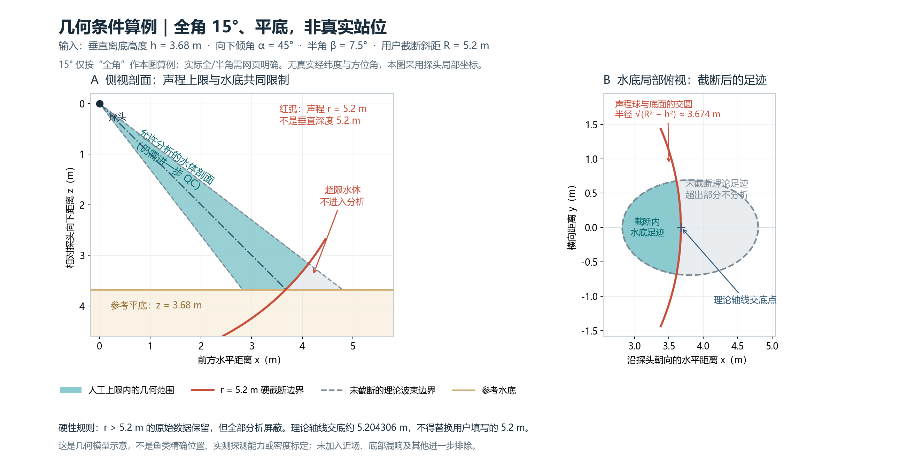

渔业声学监测科研分析系统
全规范开发与交付总规划 V4.0
项目核心目标：完整落实三份规范的全部要求及本次V4用户修订。建设支持双站先行研究、五站同步研究、长期数据积累、任意时间与设备分析、时间—深度—空间—环境联合研究、规律验证、科研绘图、完整工作台及硕士论文交付的本地科研系统。
本文件是V4开发与验收规划，不是已完成的鱼群分析结果，与包内V4三份规范共同执行；同主题以08用户契约为准，既有已签署验收记录保持原有范围。既有工程进度应以最新项目索引和阶段报告为准；本轮未执行数据库迁移、正式分析或阶段验收。
前半部是深化实施设计：研究问题、算法与数据、空间水层、Origin与出图、工作台、论文交付及工期。后半部保留全24章对应矩阵、36项交付和原始数据/方法附录，便于与规范核对。
“全面”指全部规范要求进入建设与验收范围，不等于已实现、已找到所有规律或所有技术条件已满足。新提出的方法和工程预算明确标为建议，实施前按真实数据验证。
2000号垂直离底3.68 m，人工截断斜距5.2 m。原始完整保留，超过5.2 m不能进入任何分析；理论换算不覆盖人工上限。本包三份规范已经同步修订，不再要求开发者自行猜测新旧条款。
先看本页新增要求、几何与验收，再按原完整规划执行。下方保留全部时间/空间/水层/环境/规律/Origin/出图/论文/恢复范围。
V4 用户要求与强制实现契约
版本：V4.0｜2026-11-14｜适用：三份规范、总规划、所有开发阶段与最终验收。
本文件落实本次用户明确要求；与包内旧表述冲突时，同主题以本文件为准。三份规范的其他全部功能继续有效，不能把项目缩减为截断或地图页面。本文规定的是待开发行为，不代表程序已实现或真实数据分析已通过。
1. 用户已经决定的事项
| 项目 | 必须采用的要求 |
|---|---|
| 五台设备 | 2000、2001、2002、2003、2005；设备2004不在本项目设备清单。原规范误写已按用户纠正，不再列为身份待确认。 |
| 独立设置 | 五台设备分别在网页填写参数；调整一台不能改变其他台。设备身份和站位身份分别保存。 |
| 人工分析上限 | 每台填写“分析截断斜距（m）”，从探头到回波采样位置的声程距离；这是硬上限。 |
| 2000号 | 用户填写的截断斜距为5.2 m；垂直离底高度为3.68 m。来源为用户提供，不冒充厂家校准或声学实测。 |
| 原始资料 | 原始文件及原始信号数组完整保留、可追溯；不得为了屏蔽越界数据修改原始CSV或永久截短原始数组。 |
| 分析范围 | r > r_cutoff全部硬屏蔽；r = r_cutoff可以进入后续QC，其他质量规则仍可排除。 |
| 经纬度 | 网页可直接逐台填写、编辑、校验和保存经纬度，带坐标系、精度、来源及有效期；不能要求用户改数据库或代码。 |
| 自动几何 | 根据该设备有效参数计算理论覆盖；包含深度类型、倾角、波束角及必要的方位角，不要求用户手算半径或面积。 |
五台初始状态：2000可预置上述用户值供核对保存；2001、2002、2003、2005的截断值、离底高度和所有设备坐标未提供，保持空值。不得填造经纬度，不得自动复制2000的5.2 m或3.68 m。
2. 深度字段必须分开
- 垂直离底高度 h：探头到参考水底面的垂直距离，2000为3.68 m。
- 分析截断斜距 r_cutoff：探头起算的声程上限，2000为5.2 m，控制分析硬屏蔽。
- 探头入水深度：水面到探头的垂直距离，未提供时UNKNOWN，不能把3.68 m直接当作此量。
- 理论中心轴交底斜距：由h和倾角计算的参考值。倾角从水平向下45°时，3.68/sin(45°)≈5.2043059 m；不是用户截断值，也不是实测底界。
- 原始文件depth字段：独立审计其含义，不能因为字段名叫depth就认定它等于上述任一量。
3.68与5.2是用户提供的两个值，允许四舍五入差异；不得要求严格三角恒等才允许保存，不得以计算结果5.2043覆盖5.2，也不得通过增加容差放过5.201 m。若差异显著，提示检查并保留原值；几何结果可标为待核实，但有效的人工截断仍独立生效。页面显示“分析采用5.2 m；几何参考约5.2043 m”。
波束角字段必须显式选择“全角/半角”，内部统一存半角β。历史提到15°，全角还是半角尚待核实；文档15°全角算例只用于演示与验收，不是已确认设备参数。倾角使用“相对水平面向下为正”，方位角使用“真北0°、顺时针”，若输入其他约定必须显式转换并留痕。
3. 全链路硬屏蔽
处理次序：只读原始来源 → 解析及采样距离映射 → 按设备与观测时间加载人工截断版本 → 构建距离硬掩码 → 区内QC/背景估计/滤波/目标识别 → 特征与汇总 → 时间/水层/空间/环境/规律/模型 → 图表、报告、Origin。
用于解析错误排查、存储审计的工作可读取完整原始数组；任何参与科学指标的背景、噪声归一化、动态阈值和滤波不得利用截断以外数值。越界强信号不能通过平滑、插值、邻域窗口、归一化最大值或事件合并间接影响区内结果。边界处采用明确且版本化的缺失邻域处理，不把缺失当零。
参考逻辑（契约示意，不是已交付实现）：
config = resolve(device_id, observation_time, analysis_config_version)
require finite(config.analysis_cutoff_slant_m) and config.analysis_cutoff_slant_m > 0
range_mask = valid_range_mapping AND in_manual_cutoff
analysis_mask = range_mask AND sample_quality AND configured_nearfield_bottom_qc
derived = analyze(raw_signal, analysis_mask, config_snapshot)3.1 点采样与区间采样
- 若厂家或验证资料证明数组代表点采样，使用该点实际距离r判定r ≤ cutoff。
- 若数组代表有宽度的距离单元，先保存单元上下边界。不能把跨越cutoff的整个单元当区内；默认只保留上边界≤cutoff的完整单元，跨界单元标为EXCLUDED_CROSSING_CUTOFF。无子单元信息时禁止按比例臆造截断内信号。
- 若只能确认中心距离而无法确认点/区间语义，保存参数但正式距离相关分析BLOCKED；可展示明确标注的原始索引诊断。
- 37.5 m / 1000 = 0.0375 m仅是间隔候选，必须核实起点、端点、盲区偏移、长度与量程的关系。不得在代码里把“保留前138或139个点”写死。
- 与截止上限比较前统一单位并按已知原始精度规范化；不得用任意epsilon扩大范围。浮点实现须证明与十进制边界契约一致。
3.2 各输出必须相同
所有实时统计、历史重算、候选目标、鱼群事件、声学活动指标、三水层、峰谷时段、环境关联、机器学习特征、空间比较、动态图、自动文字、CSV和Origin任务包均引用同一分析快照和mask版本。禁止页面遮住5.2 m外颜色、后台仍把它算入。厂家导出中若已有鱼数、强度总量等汇总字段，必须证明其输入范围符合本次截断；不能证明时仅保留为原始参考，不能直接作为正式截断后指标。
原始诊断视图可以显示完整量程，但超限区域须灰显/斜线标记，注明“仅原始排查，排除分析”，该视图不能作为正式活动量输入。原始导出与分析导出分开入口，文件头和清单明确类型。
3.3 缺失和分母
- 超限采样点为排除/NA，不改写为信号零。
- 一帧在允许区内有有效观测但无候选目标，活动计数可为0，仍贡献有效观测时间。
- 一帧区内全部无效，则指标NA，不贡献相应指标有效暴露；不能因为超限区有回波而判定有效。
- 一个事件跨越边界，只使用区内证据重新识别/合并，记录边界截断标志；不得从超限区补齐事件强度、长度或持续期。
- 有效时间分母、有效采样单元数和几何体积各有定义，不混用。所有指标保存分子、分母、单位、mask和配置版本。
4. 网页操作与保存
设备页固定显示五行并允许逐台进入详情。必需输入控件：截断斜距、垂直离底高度、经度、纬度、坐标系、坐标来源/精度、倾角/约定、波束角/全半角、方位角/基准、生效起止、备注；探头入水深度、坐标参考点与杆臂等可在高级参数中维护。每个数值都展示单位和简短解释，不只写“深度”。
必需流程：编辑草稿 → 自动校验 → 预览变化 → 保存新版本 → 显示受影响设备/时间/成果 → 创建重算任务 → 完成后发布新结果。用户可一次填写五台，但保存应明确成功/失败逐项状态；批量操作不得暗中复制参数。
预览包括：当前阈值线、区内/区外样本比例、受影响有效日期、预计重算范围、几何剖面和可用地图。尚未正式重算的结果显示“旧版本，待重算”，禁止只更新页面阈值标签来伪装已更新数据。
输入要求：非数值、非有限数、非正截断拒绝；超过已确认采集量程须报错或限定到适用批次，不静默夹紧。经度[-180,180]、纬度[-90,90]；空值不转0，(0,0)不自动作为缺失，但应要求检查是否实际站位。相同CRS成对经纬完整提交；经纬倒置不能静默交换。网页提交和后端API采用同一验证，不信任前端已验。
一个设备在一个时刻只能解析到一个生效参数版本。历史设置不覆盖；移动站位、改变倾角、朝向、截止值或坐标时创建新安装/参数版本。分析任务开始时固定参数快照，运行中更改不得混用。草稿不会影响正在运行任务。相互冲突的保存提示并发版本冲突，不以最后提交覆盖他人更改。
截断设置为MANUAL_HARD且不可由自动探底、潮汐更新或几何模块放宽。自动探底只能提出建议或在已允许区内新增QC排除。用户主动改变截断属于新配置、新run；这与算法绕过当前配置不同。恢复旧配置也创建新版本并记录原因，旧分析和冻结包保持可复查。
5. 空间分析与覆盖显示
网页允许用户直接录入五台经纬度，并预览站位；空间分析取观测时刻的有效位置。距离计算不能直接把经纬度差当米。位置坐标系不明、经纬缺失或坐标参考点未解决时，相关空间功能明确阻断；站内已有有效数据的时间分析仍可继续。
每台自动计算并显示：中心轴投影、波束张角、理论横截面、用户上限内的水体几何包络、条件成立时的平底交会足迹、水平投影及可观测深度范围。地图展示区分“水体水平投影”和“水底交会足迹”。不可把所有设备画成同样大小圆，也不能只用3.68×tan(15°)声称得到斜置设备真实覆盖。
缺方位角可以输出局部剖面与方向无关几何量，禁止画确定朝向的地图覆盖。未知波束全半角可保存草稿并做明确标注的条件预览，不能发布正式覆盖结果。全部公式、条件、数值验收与坐标方案见11_GPS_BEAM_GEOMETRY.md。
用户截断优先于几何；平底求交可以进一步限制几何显示或区内QC，却不能放宽分析上限。理论覆盖是安装参数与模型假设的产物，不等于实测有效探测范围，也不直接作为鱼类真实密度分母。单波束无角度定位时仅能得到可能位置范围，不能在覆盖区内画每条鱼的精确坐标。
6. 接口与数据契约
本包统一权威字段：analysis_cutoff_slant_m（人工斜距上限）、vertical_bottom_clearance_m（垂直离底高度）、downward_tilt_deg（水平向下倾角）、beam_angle_value_deg与beam_angle_kind（FULL/HALF/UNKNOWN）、heading_deg（真北顺时针）、longitude_deg、latitude_deg、coordinate_reference_system、position_accuracy_m。本文公式的R、r_cutoff、cutoff_m仅为同一人工上限的数学简写，不是第二个可写配置。旧max_analysis_range_m、vertical_bottom_reference_m如需兼容，只能为对应权威字段的只读映射。来源、有效期、版本不得丢失。JSON示例与三份规范共同采用这些名称。
实施可调整路由名称，但须保留下述职责、响应信息与错误行为。
| 接口职责 | 请求/输出的最低内容 |
|---|---|
| 获取设备及有效参数 | 五设备ID、参数版本、时间有效区间、截断值、GPS/几何可用状态、来源 |
| 校验参数草稿 | 类型/单位/角度/CRS/有效期校验结果；字段级错误，不持久化 |
| 预览参数影响 | 旧/新参数、样本排除差异、受影响日期/成果、几何预览与假设 |
| 保存参数版本 | expected_version、修改原因、新version_id、审计记录；冲突409，非法参数400/422 |
| 创建分析任务 | 设备、日期、参数快照、幂等键；返回job_id、run_id及阻断原因 |
| 查询几何 | geometry_version、源参数/坐标版本、单位、局部ENU形状、地图形状、假设/精度与状态 |
| 导出任务 | 输出类型、run_id、mask/config版本、CSV/图/报告/Origin同源校验 |
错误状态区分CUT_OFF_UNSET、RANGE_MAPPING_UNKNOWN、POSITION_UNKNOWN、CRS_UNKNOWN、BEAM_CONVENTION_UNKNOWN、HEADING_UNKNOWN、CONFIG_CONFLICT和INSUFFICIENT_COVERAGE。仅阻断依赖缺项的功能，不把整个网页锁死。面向用户显示中文原因与可操作入口，不只给代码。
7. 保留并提高完整研发要求
必须保留：双站先行与五站同步研究、24章全规范、S00—S11、36项最终交付、31类工作台入口、18类报告/证据包、16类科研图、日内升高—高值—降低—低值—再升高、任意日期/设备比较、潮相与钟点对照、风速水温关联、滞后、深度水层、五站空间与同步性、长期规律验证、Origin可编辑项目与导出、论文、备份恢复。
提高质量的方式是逐需求留证据：需求ID → 页面/API/模块 → 自动化测试 → 真实样本复核 → 产物路径 → 验收状态。必须能从规律结论点击回到支持/反对日期，再到曲线、指标和原始来源。只有图形好看、菜单齐全、演示数据能跑，均不足以认定完成。
S01交付可操作的五台参数/GPS最小表单；S02交付距离映射与硬掩码服务；S03所有统计已执行掩码；S07交付深度层与几何；S08完成空间联动和覆盖图；S09所有16图及Origin同源；S10完整工作台；S11完成追溯矩阵与真实恢复验收。不得到S10才让用户第一次填写参数，也不得先生成未截断的正式统计再称以后补齐。
本次“提高要求”不意味着承诺不存在缺陷。开发者须依据09_DEVELOPER_ACCEPTANCE.md逐条提供真实证据；失败与阻断如实列出，未满足不得宣布全系统交付。工期以总规划工作包评估，再纳入本次GPS/覆盖和截断联调；任何延期都不能静默删功能。
11｜网页经纬度录入与每台设备声束覆盖范围计算规范
版本：V4 用户修订，2026-11-14。适用于设备 2000、2001、2002、2003、2005。本文件补强完整开发规范中的设备配置、空间分析、出图与验收要求，不缩减时间规律、环境规律、Origin 或原定交付范围。
1. 必须实现的使用结果
用户可以在网页上分别输入五台设备的位置、安装姿态、波束角、垂直离底高度和分析截断斜距。系统自动计算并展示每台设备的理论声束覆盖范围，保留计算参数及版本。位置、方向或波束参数不完整时，明确显示缺项，不画一个看起来准确的虚假范围。
设备 2000 的本次明确输入是：垂直离底高度 h=3.68 m，用户分析截断斜距 R=5.2 m。安装向下倾斜 45°作为用户提供的安装信息记录。15°波束角的全角/半角含义尚未确认；本文件中涉及 15°全角的数值只用于有条件的几何算例，不得把算例默认值伪装成厂家已核实参数。其他四台设备不得自动继承 2000 的数值。
无论几何计算得到什么结果，r > R 的原始信号都不能进入分析。几何模块无权扩大用户的 5.2 m 截断值；原始数据永久保持原样。
2. 网页输入与字段定义
| 输入项 | 网页交互和含义 | 数据约束 |
|---|---|---|
| 设备编号 | 固定五台设备分别编辑 | 2000、2001、2002、2003、2005；禁止生成不存在的第六台设备 |
| 经度、纬度 | 两个独立输入框，明确顺序与单位；支持十进制度，度分秒导入时显示换算结果 | 经度 [-180,180]、纬度 [-90,90]；空值不能变成 0；经纬度互换疑似错误提示 |
| 坐标来源与坐标系 | 用户选择测量仪器/地图取点/手工抄录，填写 WGS84、GCJ-02、BD-09 或其他已识别坐标系 | 保存原输入；没有可核验的转换流程，不得直接混用不同坐标系算距离 |
| 定位对象 | “探头位置”或“岸边固定点/GPS天线位置” | 后者需要填写到探头的偏移或标为近似；不能把岸边点击点当精确探头点 |
| 探头共同垂直基准位置 | 需要跨设备三维重叠时填写相对于同一垂直基准的探头高程/深度及其时间 | 椭球高、海拔、海图基准面深度、水面下深度不可混用；各台的 h 不能代替共同高程 |
| 位置精度与备注 | 精度可未知，允许填写米级误差和照片/测量记录说明 | 不确定度不得默认 0；不以经纬度小数位数代替测量精度 |
| 探头方位角 ψ | 从真北顺时针，北 0°、东 90°、南 180°、西 270° | [0,360)；若来自磁罗盘，保留原值与参考北向，转换有记录 |
| 向下倾角 α | 相对水平向下为正，垂直向下为 90°；网页附小示意图 | 主流程支持 0°至90°；其他姿态进入明确的完整三维姿态流程，不能静默折算 |
| 波束角值与含义 | 必须选择“全角”或“半角”；同时显示内部半角 β；可标记“待确认” | 全角 θ 对应 β=θ/2；半角输入 β 直接使用；0<β<90° |
| 波束形状 | 圆锥对称/厂家给定横纵不同角/未知 | 不对称波束必须分别记录横向、纵向参数及定义；不得强套圆锥公式 |
| 垂直离底高度 h | “从探头到探头正下方底面的垂直距离”，单位 m | h>0；不是沿声束斜距，也不等同于水面到底总水深 |
| 分析截断斜距 R | 主控项，单位 m，直写“仅分析 r≤R 的数据” | R>0；不能由 h 或潮高静默覆盖；2000 当前明确值 5.2 |
| 近场排除距离 r₀ | 如使用，独立列出，给出依据 | 0≤r₀<R；默认未知不能伪称厂家盲区已校准 |
| 探头距水面深度、底面模型 | 为更完整水体几何选填；底面可先采用水平平面假设 | 未知时如波束全部向下，可在水平底面假设下算；波束越过水平时必须处理水面边界 |
| 生效开始/结束时间 | 每次换位、姿态改变或参数修订都创建新版本 | 同设备有效期不得产生未解释重叠；历史图必须使用对应时段版本 |
| 参数来源、确认状态、修改原因 | 用户填写/厂家说明/实测/估算/条件假设分别记录 | “可计算”与“参数已验证”是不同状态 |
网页必须提供“保存草稿—预览位置和覆盖—保存新版本—选择是否重算相关分析”的完整流程。预览明确列出受影响设备、日期区间与图表，不更新或覆盖已冻结成果。批量录入允许复制字段，但每台确认后才生效；不允许自动把某台经纬度和截断距离写入另外四台。
3. 三种范围要分开显示
- 理论水体覆盖体积：声束、用户斜距截断与水面/底面边界的交集，单位 m³。它是几何体积，不是已校准的有效探测体积。
- 理论水体覆盖的俯视投影：上述三维区域投影到水平面的区域，单位 m²，用于展示可能观测的水平范围；投影范围不等于底部被照射区域。
- 理论底面足迹：声束与指定底面相交，再受
r≤R限制的区域。它可能是完整圆/椭圆、被截掉一部分的区域，也可能完全为空。
网页提供平面图、纵向剖面和可旋转三维示意；三者使用同一参数版本。默认标题写“理论声束范围（基于所列参数与底面假设）”。参数未确认时加明显状态标识。原始数据诊断视图可以用灰色展示被排除部分，但分析图、统计、模型、报告与 Origin 导出不得把灰区重新计入。
4. 计算坐标与核心判定
4.1 局部坐标与方向
地理转换采用有记录的地理坐标系及局部米制坐标。公式为便于计算，使用以探头为原点的局部坐标 (X,Y,Z)：X 沿探头水平朝向，Y 水平向右，Z 垂直向下。声束轴单位向量为：
u = (cos α, 0, sin α)。
对任意声束射线单位方向 v，要求 |v|=1 且 u·v ≥ cos β。声程 r 是从探头到点的欧氏距离，点为 p=r v。截断面是半径 R 的球面，不是 X=R 的竖直平面，也不是沿轴向距离为 R 的平面。
当方位角 ψ 已知，转换到局部东/北/上 ENU：
E = X sin ψ + Y cos ψ
N = X cos ψ − Y sin ψ
U = −Z
经纬度定位与地球坐标转换单独使用经过验证的转换实现；不得把经纬度差直接当米，不得把 Web Mercator 屏幕面积直接当精确底面面积。跨站距离应使用一致参考系的测地距离或适当局部米制投影，并记录算法。
原始数据的距离轴还需单独核实：r 必须确认为声程斜距。若设备导出字段是垂直水深或其他派生量，先明确其定义再建立映射。不能直接把 1000 个采样点和标称量程相除便宣称距离轴已校准，也不能再次把用户已输入的 5.2 m 斜距按 45°重复换算。
4.2 有效理论区域
对于水平底面 Z=h，若探头位于水下深度 d，水面为 Z=−d，则理论区域定义为：
C = { p=r v : r₀≤r≤R, |v|=1, u·v≥cosβ, −d≤pZ≤h }。
当前常见 α>β 的向下声束，所有射线都向下。即使 d 未提供，只要探头确在水中，水面不截断该向下区域；此时各方向的末端距离为：
rmax(v)=min(R, h/vZ)，其中 vZ>0。
若 rmax<r₀，该射线有效段为空。若 α≤β，可能存在水平或朝上射线，不能除以零、把负距离当正距离或假装所有射线都碰到底。必须使用射线与水层的区间求交；水面/姿态信息不够时，显示“水体边界不足，结果为未裁水面的条件示意”。
若以后使用坡面或测深网格，采用相应射线—平面/三角网格求交，并保留水平底面版本与来源。不能只凭五个站点的 h 值虚构高分辨率地形。
4.3 数值实现要求
以半锥角范围内的方向参数生成网格，例如 θ∈[0,β]、φ∈[0,2π)：
vX = cosθ cosα − sinθ cosφ sinα
vY = sinθ sinφ
vZ = cosθ sinα + sinθ cosφ cosα。
沿每条射线求合法声程区间，连接相邻边界生成网格；投影时对真实投影区域求并集。不能仅对底面足迹做平移当水体投影，不能仅用凸包填平真实空洞/缺口。侧边、球面截断边界、底面边界以及近场边界都需被处理。
积分求体积时，方向的立体角权重不能忽略。全向下且水平底面时：
V = (1/3) ∫beam max[rmax(v)^3 − r₀^3, 0] dΩ，dΩ=sinθ dθ dφ。
实现可以在 t=cosθ 上等距采样以获得正确权重。开发验收必须包含网格加密：典型非退化场景的体积/面积加密前后变化≤0.5%，边界位置误差≤0.01 m；近零面积时用绝对误差而非无意义的相对百分比。保存网格分辨率、数值误差估计、算法版本。网页显示精度不得高于输入和误差允许的精度。
5. 解析公式及不能混用的量
以下公式是本规范在“均匀圆锥声束、直线传播、水平底面”假设下的几何推导，不代表设备厂家给出了真实探鱼概率。
5.1 垂直指向特例
当 α=90° 时，未受斜距上限限制的底面圆半径为 h tanβ，圆边缘的真实声程是 h/cosβ。因此：
R<h：声束尚未到达底面，底面足迹为空。R≥h：实际底面足迹半径a=min(h tanβ, sqrt(R²−h²))。- 当
R≥h/cosβ且r₀=0时，整个水体圆锥直到海底都被保留，其体积为V=πh³tan²β/3。
5.2 斜置声束的底面椭圆与硬截断
当 α>β 且水平底面为 Z=h，令 A=sin²α−sin²β>0。未施加 R 截断时，底面椭圆满足：
(X−Xc)²/a² + Y²/b² ≤ 1
其中：
Xc = h sinα cosα/A
a = h sinβ cosβ/A
b = h sinβ/sqrt(A)。
施加用户斜距上限后，还必须同时满足 X²+Y²≤R²−h²；若 R<h，足迹为空。也就是说，最终足迹是椭圆与该圆盘的交集，不保证仍为椭圆。
中心纵剖面中，较陡和较平的波束边缘到达底面的斜距分别为：
r_near = h/sin(α+β)、r_far = h/sin(α−β)。
这两式仅用于当前姿态范围内的纵剖面解释，遇到边缘越过垂直/水平的姿态需使用一般射线求交，不应把 near/far 名称机械外推。
5.3 轴向横截面不是统一声程截面
沿中心轴前进轴向距离 s，垂直于轴的截面圆半径为 s tanβ；该圆边缘距探头的声程是 s/cosβ，大于 s。故不能在 s=R 画半径 R tanβ 的整圆并声称都在 r≤R 内。
若没有底面或其他边界裁切、r₀=0，欧氏声程 R 以内的理想圆锥球扇体积为：
Ω=2π(1−cosβ)，Vsector=ΩR³/3。
它与轴向平面截断圆锥的 πR³tan²β/3 不同。采用哪一个公式必须与 r 的定义、截断面和水体边界一致。
6. 两组数值验收基准
以下均为几何计算测试输入，不是对全部设备实际安装和真实探测范围的认定。长度验算容差 0.001 m，解析面积容差 0.001 m²；实际网页宜显示厘米级或更粗且注明估算。
6.1 2000 条件算例：向下 45°、全角 15°
输入 h=3.68 m, R=5.2 m, α=45°, β=7.5°, r₀=0，假设水平底面。
| 计算量 | 应得数值 | 用途/限制 |
|---|---|---|
| 中心轴理论底距 h/sinα | 5.204306 m | 仅参考，绝不把 R=5.2 改为此值 |
| 用户 R 处轴点垂直距离 R sinα | 3.676955 m | 与 3.68 的约 3 mm 差来自输入舍入，不应阻止保存 |
| 较陡边缘到底斜距 | 4.638538 m | 部分方向可能在用户截断值前遇到底 |
| 较平边缘到底斜距 | 6.045061 m | 该方向底部在 R 之外，不属于保留足迹 |
| 未截断底面椭圆中心 Xc | 3.809816 m | 位于探头朝向一侧 |
| 未截断椭圆半轴 a、b | 0.986053 m；0.691176 m | 只能作为被裁切前的参考 |
| 未截断椭圆面积 | 2.141109 m² | 不得作为最终保留底足迹面积 |
| R 在底面的限制圆盘半径 | 3.673908 m | 与椭圆求交后才是最终足迹 |
| 未裁底面球扇体积 | 2.519392 m³ | 未减去撞到底后的部分 |
| 裁底后的水体体积，数值积分参考 | 约 2.35305 m³ | 以角度网格收敛与 0.5% 容差验收；无近场排除 |
| 水体俯视投影的最远前向位置 | 4.125437 m | 此例由较平边缘在 R 截断处给出，不等于底足迹最远点 |
这组参数下，系统应显示“部分声束触底、部分方向被 5.2 m 截断”。应同时显示完整的条件声束参考轮廓和明确的保留区域；正式分析的范围只对应保留区域。
6.2 垂直指向回归测试
输入 h=3.68 m, R=5.2 m, α=90°, β=7.5°, r₀=0，假设水平底面。
| 计算量 | 应得数值 |
|---|---|
| 底面圆半径 | 0.484481 m |
| 底面圆直径 | 0.968962 m |
| 底面圆边缘声程 | 3.711755 m |
| 底面足迹面积 | 0.737401 m² |
| 到底之前的理论水体体积 | 0.904545 m³ |
由于 5.2 m 大于圆边缘的 3.711755 m，底面圆全部保留。改变 ψ 不应改变这组圆形足迹的面积和位置。另用 R=3 m 验证“底面足迹为空，但探头前方仍有理论水体覆盖”，不能把无底面交点显示为无声束。
7. 与声学分析及空间规律的连接
单波束的一条距离—回波强度序列通常不包含每个目标在波束内部的精确角度。除非原始数据确有经过核实的逐目标方位/俯仰观测，系统不得把某个回波任意放到地图上某个确定鱼点；中心轴投影只能标为“中心线假设位置”，并附其所在距离壳层的可能位置范围。
同样，几何知道某方向会先触底，不代表一维回波数据就可以精确按方向去掉底部信号。r≤R 只是必须满足的上限；其内仍需独立的底部回波、噪声和近场质量控制。任何额外 QC 只能在 R 内进一步剔除，不能补回 R 外信号。
空间页面应至少支持：实际站点位置、站间距离矩阵、每台理论覆盖、任意两台理论重叠区/重叠体积、按相同时间窗和共同有效观测条件比较各站指标、时间回放、坐标与参数历史查看。重叠只表示条件几何重叠，不证明同一群鱼被重复观测；不重叠也不等于鱼无法迁移。
跨设备重叠计算必须区分二维和三维：经纬度与方向足够时，可比较有明确假设的水体俯视投影重叠；要比较实际三维体积交集，还需要各探头在同一时刻、同一垂直基准下的位置，以及兼容的水面/底面模型。仅有每台离底 h 并不足以把五个局部空间放到统一高度；缺少这些信息时禁用三维重叠数值，不能把二维投影重叠写成水体重叠。
可以输出五站随时间的相对声学指标和有证据等级的站间同步/滞后关系。不能仅凭五个点平滑插值就声称精确全水域鱼密度，不能把几何覆盖体积未经探测概率/增益/波束响应校准就直接换算为真实鱼类密度。未知目标角度、环境声速变化、波束旁瓣、遮挡和设备设置均应进入适用性说明。
8. 缺项时的网页行为与历史追溯
| 情形 | 仍允许做的事 | 暂不能声称的结果 |
|---|---|---|
| 经度或纬度缺失 | 保存设备参数、原始导入；其他条件足够时继续单设备时间分析 | 真正站点定位、站间距离、地图覆盖重叠 |
| 方位角缺失、其余几何已知 | 局部不定向剖面、旋转不变的几何量 | 确定地理朝向的斜置足迹；不得自动填北向 |
| 波束全/半角含义待确认 | 保存草稿、显示明确标记的条件预览 | 已验证的正式覆盖结论 |
| h 缺失但 R 已明确 | 在 R 内做有适用 QC 的距离域分析；画未裁底面条件声束 | 真实底面足迹、可靠离底高度分层 |
| R 缺失 | 保留原始数据、完成导入审计和参数配置 | 正式距离截断后的统计、模型和分析导出 |
| 设备移动/潮位变动 | 按有效期新建位置、安装/离底高度版本；有实测序列时按时间匹配 | 用当前坐标或 h 覆盖所有过去日期 |
| 离线或底图服务不可用 | 经纬度表、局部米制平面图、比例尺、北箭头和站间距离 | 不能因此阻止已有本地数据分析或伪造在线地图 |
固定安装、浮动安装的 h 随时间变化方式不同，不能统一用“潮高加上旧 h”。有实测安装方式与基准后才建立动态几何模型。无论 h 如何变，手工 R 仍只按用户明确保存的版本生效；系统可以提示重新检查 R，不可自动加减潮高替用户改截断值。
每次计算记录：设备 ID、位置版本、参数版本、生效时间、R/h/α/β/ψ、坐标转换记录、底面模型、算法版本、误差估计、计算时间、来源数据/运行 ID。截图、SVG/PDF/PNG、动画帧、CSV/JSON 和 Origin 图注均需能追溯到这些字段。
9. 必过验收清单
- GEO-01：五台设备可在网页独立录入/修改经纬度，刷新和重启后仍保留；错误单位、纬经互换和缺失值有明确反馈。
- GEO-02：输入 15°全角与输入 7.5°半角，得到相同 β 与覆盖结果；选择“待确认”时正式结果标识不能变为已确认。
- GEO-03：2000 的 3.68/5.2/45°可共同保存；理论 5.204306 不更改用户 5.2，且历史版本可查。
- GEO-04：上述 45°与90°两组解析/数值基准通过，球面与轴向平面截断不能混用。
- GEO-05：ψ 从 0°改为90°，非对称俯视轮廓按规定旋转；距离、面积、体积在相同水平底面条件下不变。
- GEO-06：没有方位角时不得默认为0°画正式朝向；没有坐标时不得定位到(0,0)；有时间分析条件时相关页面仍可用。
- GEO-07：r=R 边界遵循分析契约；r>R 的任何网格/回波不得出现在保留范围中。改变 R 外振幅不应改变 R 内的声学结果和几何结果。
- GEO-08：底面足迹为空、部分截断、完整覆盖、近场排除、零分母/近水平边缘、缺失海面边界均有测试，不能出现负面积/无穷值/静默补零。
- GEO-09：历史时间切换使用当时的经纬度与姿态参数；新位置版本不改变冻结结果。参数输入、地图、导出、Origin 显示同一版本。
- GEO-10：同一地点由不同坐标系输入时，仅在有验证转换链时合并比较；往返转换误差记录在案。用测量已知的合成基准点验证距离，不以肉眼地图重合代替测试。
- GEO-11：网格加密满足误差要求；正式输出注明是理论覆盖；圆锥体积不被直接命名为鱼密度分母或已校准有效检测体积。
- GEO-12：网络断开时仍能查看位置表和局部范围图；前端数值预览与后端权威计算一致，所有导出走同一后端几何服务。
10. 一手资料与本文件推导边界
- PROJ 官方：Geocentric to topocentric conversion，2026-11-14 检索。官方说明了从地心坐标转换到局部 East/North/Up 坐标及地理坐标到地心再到局部坐标的转换链。它支持本规范对坐标转换的实施要求，不证明声呐参数或鱼检测能力。
- Esri 官方：Geometry projections，2026-11-14 检索。支持按分析用途选择测地方法/适当投影、区分角度坐标与米制测量的要求。本项目不强制采购或使用 Esri。
- 本文件第4—6节的声束区域、椭圆交集与体积公式由明确几何假设推导，数值用双精度计算复核。45°体积参考采用 t=cosθ 等距、方位等距的800×1600中点积分得到约2.353046 m³；开发者须自行提供收敛结果，不能把这次数值复核写成网页程序已经通过验收。
覆盖计算模块的完成标准是“输入可编辑、定义不混淆、几何可复核、边界受硬截断约束、历史可追溯、图表可导出”。数据未提供的地方保持未知，不以漂亮图形填补事实缺失。

V4 开发交付与验收附录
版本：2026-11-14。本文是待开发系统的验收要求，不是软件已实现、已测试或已通过验收的证明。本文在原有三份规范、全规划、16 类科研图、18 类报告及 36 项最终交付物基础上增加可复核的标准，不缩减原范围。
一、必须先完成的用户要求
设备清单固定为 2000、2001、2002、2003、2005。每台设备必须能在网页中独立填写分析截断斜距、垂直离底高度、安装倾角、波束角及其全角/半角含义、经纬度与坐标系；需要在地图上确定声束朝向时，还应填写探头方位角及其参考方向。每项参数保存来源、有效时间、操作者和版本。
2000 号设备的当前用户值为：垂直离底高度 3.68 m，分析截断斜距 5.2 m。不得根据三角函数反算出略大于 5.2 m 的数值后替换用户填写的截断值。其余设备的值应独立输入，不能复制 2000 号的数值作为已确认参数。这里的“垂直离底高度”不是海面至海底总水深。
硬性屏蔽必须在背景估计、归一化、平滑、候选识别、事件合并、统计、建模、规律识别及科研导出之前生效。所有超过用户截断斜距的信号都不得参与这些计算。原始文件完整保留。截图或原始诊断画面可以显示屏蔽区，但必须明确标记“已排除，不参与分析”。
距离映射、截止边界及 mask 应形成单一公共计算服务，网页、后台任务、报告和 Origin 导出不得各自实现另一套口径。S01 完成配置及版本；S02 完成距离映射审计；S03 在产生正式统计之前完成硬截断验收。S07 再增加水层、近底区等分析，不得把用户要求推迟到 S07。
二、验收证据怎样提交
每条用例至少记录：用例 ID、需求条款、执行版本/提交号、环境、输入文件及 SHA-256、设备与参数版本、操作步骤、预期、实际结果、PASS/FAIL/BLOCKED、运行时间、运行日志及输出工件位置、执行者与复核者。截图用于证明交互状态，不能替代数值比对、源数据抽样和运行日志。
测试数据分为可手算的小型合成数据与真实样本。合成数据的文件名、图标题和报告必须标注“验收合成数据”，不得进入真实研究数据集或被用于声称真实鱼群规律。完整流程必须另用真实样本运行。浮点误差容限按量纲和数值算法预先登记；显示四舍五入不能改变边界判断或数据筛选。
三、45 条最低验收用例
A. 数据真实性与硬截断
| ID | 阶段 | 输入或操作 | 必须得到的结果 | 必须留存的证据 |
|---|---|---|---|---|
| K01 | S01 | 打开设备管理、导入映射、筛选器和导出表 | 当前设备清单均为 2000、2001、2002、2003、2005；未知设备进入待映射队列，不能静默归入某台设备 | 页面记录、设备表快照、未知编号导入日志 |
| K02 | S01/S03 | 给五台设备分别保存不同合法截断值；只修改 2000 | 五台分别保存、分别应用；其他四台参数和既有结果不受误改；界面明确单位为 m、距离类型为斜距 | 参数前后差异、逐设备 mask 计数与运行清单 |
| K03 | S01/S03 | 2000 填 3.68 m 垂直离底、5.2 m 截断斜距、45°向下倾角 | 系统保留两个用户输入；分析上界严格为 5.2 m；几何反算值只作有来源的辅助解释，不覆盖 5.2 | API/数据库读回值、边界明细、界面截图 |
| K04 | S02/S03 | 已知距离映射的小样本含 r=5.199、5.200、5.201 m，其他质量条件均有效 | 前两点通过硬截断，第三点排除；r=5.2 仍可被独立 QC 规则排除；不得以显示精度把 5.201 四舍五入后保留 | 逐点距离、mask、排除原因、断言结果 |
| K05 | S02/S03 | 使用一个支持范围跨越截断线的距离单元；同时测试点采样与区间采样格式 | 按已声明采样语义执行。区间单元无法拆分时，保守排除跨界单元；不能按中心在界内就把界外贡献带入。点采样按经核实的点坐标判断 | 距离映射版本、边界示意、手算对照表 |
| K06 | S02/S03 | 距离起点、采样点含义或量程定义尚未核实 | 可以归档原始文件和保存用户配置；正式距离截断分析显示 BLOCKED，明确缺少哪项依据；不得默认所有文件均是 37.5 m/1000 点 | 导入审计、阻断原因、确认后的重新运行记录 |
| K07 | S03 | 两份数据界内完全相同，界外分别设为零、极强回波及随机波动 | 背景、归一化、滤波结果、界内候选、事件、活动指标与正式导出相同；仅原始诊断和排除量审计可不同 | 变换输入、各处理阶段对比、允许差异字段清单 |
| K08 | S03/S07 | 构造连通候选、平滑窗口或事件轨迹跨越 5.2 m | 跨界连接不能反向改变界内阈值或让界外点进入事件；事件属性只用有效域数据计算；边缘处理方式公开 | 候选与事件点索引、滤波边界测试、事件审计 |
| K09 | S03 | 同一时段分别输入“界内有效但无候选”“没有有效观测”“只有界外强回波且界内有效” | 第一、第三种候选计数、事件率或出现比例为 0；原始强度均值等仍按界内有效值计算，不强制归零。第二种指标为 NA；有效观测时长/帧数分母正确，不把缺测填 0，也不因界外目标而删除整帧 | 计数、分母、覆盖率、缺测原因表 |
| K10 | S02/S03 | 导入文件后改截断、重算、导出、备份 | 原始文件字节与 SHA-256 不变；分析层使用独立 mask/派生表；不能清空、截短或重写原始回波列 | 原始文件前后哈希、只读保护检查、派生文件清单 |
| K11 | S03/S09/S10 | 对同一 run 查询网页曲线、统计 API、报告、分析 CSV、Origin 任务包 | 所有正式结果使用相同截断及配置版本；导出中没有任何被排除的样本贡献；原始文件下载与分析数据导出有明确区别 | 跨出口数值对账、导出清单、run_id 关联 |
| K12 | S02/S03 | 原始文件附带厂家全量程“鱼数/强度/深度”等汇总字段，但其算法与有效域未知 | 原始字段保留；不能把全量程汇总值直接当作已执行用户截断的指标。无法重新计算时，该指标标为不适用/待验证 | 字段字典、来源标签、指标使用审计 |
B. 配置、导入与历史版本
| ID | 阶段 | 输入或操作 | 必须得到的结果 | 必须留存的证据 |
|---|---|---|---|---|
| K13 | S01 | 输入空值、负数、0、NaN、无穷大、单位混用、明显超出已知量程的截断值 | 拒绝非法值并定位字段；未知量程不能冒充已校验；缺少截断的设备不能产生正式分析；其余完整设备可独立运行 | 前后端同规则测试、错误提示、设备级状态 |
| K14 | S01/S03 | 2000 的截断从 5.2 改为 4.8 m，预览后保存并重算 | 显示影响设备、时间范围和预计排除量；生成新配置和 run；旧缓存不能作为新结果展示；新结果完成前标为待重算/计算中 | 配置差异、缓存键、任务日志、版本切换记录 |
| K15 | S01/S03 | 两个浏览器同时修改同一参数；任务读取期间另一人保存新版本 | 采用版本冲突检测；拒绝静默覆盖；单个 run 绑定不可变快照，不能前半段用旧阈值、后半段用新阈值 | 并发用例、冲突响应、快照哈希 |
| K16 | S01/S03/S11 | 保存配置时模拟失败；运行中断后恢复；将配置恢复到旧值 | 配置原子提交或回滚，无半套参数；任务可安全失败/重试；恢复旧值生成有来源的新版本，保留中间版本及审计 | 故障注入日志、事务状态、重试一致性结果 |
| K17 | S02/S03 | 重传相同文件、同秒多条有效记录、同名异内容文件、跨文件重叠数据 | 相同文件幂等；不能仅按秒去重；同名异内容及冲突单独登记；处理策略能追溯，不重复累加活动 | 文件登记、行级标识、重复与冲突报告 |
| K18 | S03/S11 | 补传历史日期、跨日文件、部分损坏文件；同时保留已冻结数据集 | 有效片段与错误分开审计；受影响日期可重算新版本；冻结结果不被自动覆盖；双站与五站研究数据集身份独立 | 增量影响清单、冻结前后哈希、错误行报告 |
C. 经纬度、声束范围与空间分析
| ID | 阶段 | 输入或操作 | 必须得到的结果 | 必须留存的证据 |
|---|---|---|---|---|
| K19 | S01/S08 | 从网页为每台设备录入经度、纬度、坐标系、来源、精度与有效期，保存后重新打开 | 数据可编辑、可回读、可导出；经纬字段不交换，范围检查有效；能区分设备位置、站位和安装历史 | 表单测试、数据表、导出字段、地图点位 |
| K20 | S01/S08 | 提供不同坐标系、疑似经纬颠倒、缺失经纬度、同一点重复站位 | 明确提示并保留来源；未经可靠转换不混算距离；缺坐标仍可做满足条件的时间分析，但相应空间距离/天文昼夜功能标明不可用；重复坐标需核实 | 坐标审计、转换版本、阻断提示 |
| K21 | S01/S08 | 设备迁移或朝向变化，设置新的生效时间，再查询迁移前后数据 | 历史数据匹配当时位置、姿态与截断版本；站位标签和覆盖图随时间变化；设备型号相同不等于安装参数相同 | 时间区间匹配测试、前后地图及运行清单 |
| K22 | S07/S08 | 分别输入波束全角、半角；改变深度/斜距、倾角和方位角；对照几何算例 | 明确角度定义并统一转换；范围计算符合几何规范，理论结果不越过用户截断；不把斜置声束横截面圆当成海底足迹，也不把体积当成标定鱼密度 | 可手算算例、数值误差界、几何版本及图层属性 |
| K23 | S08 | 只有位置、深度和波束角，没有方位角；或只有估计的平底假设 | 可显示未定向的局部剖面/理论范围及假设；不能伪造地图上确定方向的扇形或实测海底足迹；改变方位角后投影方向正确 | 参数缺失状态、假设标签、旋转/投影测试 |
| K24 | S08 | 两设备距离近、覆盖重叠，另有缺测站；关闭在线底图网络 | 区分仪器覆盖重叠与同一条鱼重复探测；不能把五个站位插值成已证实鱼群连续密度或迁移路径；离线仍能显示坐标表、站距及本地坐标示意图 | 重叠说明、图例、离线测试、空间报告 |
D. 规律与科学证据
| ID | 阶段 | 输入或操作 | 必须得到的结果 | 必须留存的证据 |
|---|---|---|---|---|
| K25 | S03/S06/S10 | 为每台设备提供可手算的“早间高—中间低—再次升高”合成序列，再运行真实样本 | 分别输出各设备高值时段、下降开始/结束、回升时段、持续时间和观测覆盖；不足以识别时不强行给时间；真实样本结果只据实际数据 | 合成期望表、逐设备结果、真实运行记录 |
| K26 | S04/S06 | 选择任意日期、任意天数、自定义日内区间及设备组合；含跨午夜、边界时间和时区转换 | 区间端点规则统一；北京时间与原始时区可追溯；跨午夜归属不重复不漏；空集给出无数据原因 | 查询条件、逐行选择对账、时区测试 |
| K27 | S04/S07 | 比较采样时长不同的日期、连续 N 天与前 N 个有效观测日、参考均值为 0 的情况 | 展示有效覆盖和规范化指标；不把缺测日当有效基线日；参考为 0 时百分比变化为 NA 并解释；比较口径可选择和复现 | 基线成员清单、分母表、手算差值 |
| K28 | S06/S07 | 查看 24 小时曲线、15 分钟或配置窗口热图、2 小时时段比较、周/月/长期变化 | 聚合窗口和最小覆盖要求明确；低覆盖格标记；单日偶然峰值不能自动变成长期规律；支持与反证日期均可查看 | 聚合对照、覆盖图、规律等级证据 |
| K29 | S06/S07 | 以真实日期、经纬度和时区计算晨昏昼夜；分析绝对深度、离底高度、相对水层 | 每种纵坐标含义清楚；水层只在有效观测域内计算；不同设备不可见的水层为 NA；没有坐标时不伪造天文分段 | 分层边界、日期/坐标输入、可见域表 |
| K30 | S05 | 导入潮汐、风速、风向、水温，含不同单位、时间分辨率、站点和间断 | 来源/单位/时区/质量状态完整；匹配容差、插值上限可配置并记录；预测潮与实测潮区分；风向按圆周量处理，长缺口不盲目补齐 | 环境导入审计、配对明细、未匹配率 |
| K31 | S05/S07 | 分析同期、滞后、多变量关系及多种候选时滞 | 说明滞后方向与预设搜索范围；处理有效样本、时间自相关、重复观测和多重比较；输出效应量及不确定性，关联不能写成因果；不支持的方法有诊断说明 | 分析计划、模型诊断、候选时滞表、置信区间 |
| K32 | S07/S10 | 点击一条“某时段活动较多”的规律卡片，再加入反例日期重算 | 能下钻至日期/时间窗、有效暴露、指标、配置、支持与反证、源文件和回波片段；新反例可降低或撤回规律，旧版本保留 | 完整证据链、规律版本差异、撤回原因 |
| K33 | S07/S08 | 比较多站同步、先后峰值、水层差异；测试只有两台有数据和五台均有数据 | 实际覆盖决定双站/五站研究可用性；差异须显示各站可比域；时间领先只称关联或时差，不能冒充确认鱼群迁移 | 同步覆盖、共同时间窗、比较条件与限制 |
| K34 | S08/S10 | 动态播放暂停、单步、时间跳转、倍速、设备切换；缺测帧和环境数据同步变化 | 回放对应同一时间轴和参数版本；图例/色标规则固定或清楚提示变化；缺测不伪装成鱼群消失；导出动画与静态取帧一致 | 录屏、帧时间清单、逐帧抽样及导出文件 |
E. 出图、工作台、运行维护与最终交付
| ID | 阶段 | 输入或操作 | 必须得到的结果 | 必须留存的证据 |
|---|---|---|---|---|
| K35 | S09 | 对完整 16 类图逐类提交有足够条件的数据；另测条件不足的数据 | 16 类图逐项有交付和验收记录，不能以相似图重复充数；单位、坐标、色标、误差说明、样本量及有效覆盖正确；无条件时说明缺项而非造图 | 16 项图表登记、源表、图注与人工复核表 |
| K36 | S09 | 网页提交 Origin 任务：入队→工作表→绘图→保存项目→关闭→重开→导出 | 本机完成可编辑项目和正式图闭环；重开后源表、图层、轴及单位仍正确；任务 ID 与分析 run 对应，导出不是空图或旧图 | 本机版本、Worker 日志、OPJU、重开核对、PNG/PDF/SVG |
| K37 | S09 | Origin 未安装/许可不可用、任务中断、模板缺失、两个任务同时提交 | 明确失败类别；网页请求不被长任务阻塞；Worker 按设计串行且重试不串项目；保留任务包和手动闭环。手动成功不能冒充自动桥接已通过 | 故障测试、状态流转、重试记录、替代导出包 |
| K38 | S09/S10 | 生成 18 类报告与论文各章节证据包，并核对正文提到的数字 | 每类报告覆盖其定义内容；图表数值与同一 run 的表一致；来源、设备配置、环境版本、覆盖率、方法可追溯；不将合成结果写入真实研究结论 | 报告清单、数字对账、证据包与引用清单 |
| K39 | S10 | 在常用桌面浏览器完成上传→配置→校验→分析→规律→出图→导出的完整操作 | 用户不需改代码或数据库；输入错误能定位并保留已填内容；进度、成功、失败、取消状态清楚；刷新或断开页面不静默取消后台已接受任务 | 全流程录屏、交互检查表、任务状态记录 |
| K40 | S03/S10 | 文件未上传完、磁盘不足、后台任务异常退出或重复点击“运行” | 无完整性标记的文件不进入正式分析；失败不发布半成品；任务幂等/去重或明确创建独立 run；取消后清理暂存并保留可诊断记录 | 故障注入、产物发布记录、重试及取消测试 |
| K41 | S00/S10 | 使用本节规定的 W1/W2/W3 工作负载测试页面、查询、导入和内存 | 在登记的机器与数据规模下达到签定预算；报告冷/热缓存、P50/P95、失败率和峰值内存；不能只用空库或小样例声称支持全量 | 可重复基准脚本、数据清单、机器信息、原始测量值 |
| K42 | S11 | 冻结一个真实数据集；在新的目标目录从备份恢复并重新运行代表性分析 | 能恢复数据库、配置、必要原始数据引用/实体、模板与版本；冻结内容哈希匹配；在预登记容限内复现数值结果；原目录保持不变 | 恢复演练日志、缺失项检查、哈希与数值对比 |
| K43 | S11 | 对完整包进行部署、升级/数据库迁移和失败回滚演练 | 普通用户按说明能启动；依赖与环境可复建；升级前可备份，失败不损坏已验收数据；不能通过清空旧库实现“迁移成功” | 部署手册、依赖锁定、迁移日志、回滚结果 |
| K44 | S00—S11 | 逐项核对 24 章主规范、阶段任务、网页功能、16 类图、18 类报告、36 项最终交付物 | 每项有实现位置、测试 ID、产物和状态；不以“有页面”代替后台可用；缺项、延期和阻断独立列示，不从分母中消失 | 需求追踪矩阵、阶段验收单、开放问题清单 |
| K45 | S11 | 由用户亲自输入五台参数和位置，用一份真实样本从头走完下列流程 | 用户能独立完成关键操作并解释哪些时段多/少、分析范围在哪里、哪些结论证据不足；所见结果与开发者验收工件一致 | 用户操作记录、问题整改记录、最终签收版本 |
四、性能验收须先把负载写清楚
不写“任何数据秒开”“支持无限数据”等无法验收的承诺。S00 记录实际部署机器的 CPU、内存、磁盘、操作系统、浏览器、数据库与依赖版本。以下预算是拟定开发指标，需在 S00 的真实样本基准后形成明确验收值，不能在 S10 才临时放宽。
| 工作负载 | 固定输入与测量方式 | 拟定指标与必须记录项 |
|---|---|---|
| W1 日常交互 | 已导入的真实单日数据；固定三组查询条件；每组冷启动一次、热查询至少 20 次；后台同时进行一次正常导入 | 配置/任务提交 API 的 P95 ≤2 s；已预计算日统计的热查询 P95 ≤3 s；网页图表完成显示 P95 ≤5 s。报告服务端耗时、浏览器渲染耗时和失败率，不把“返回任务 ID”算分析完成 |
| W2 原始大文件导入 | 当时可提供的最大真实文件和完整已交付数据清单；记录字节、行、回波点、损坏行及源盘速度 | 采用流式处理；登记 MB/s、行/s、峰值内存、读写量、总耗时及失败重试成本。S00 冻结与机器匹配的内存上限和吞吐下限，内存不能随文件总大小线性增长到耗尽 |
| W3 长期对比与五站回放 | 5 台 ×90 天的聚合表负载；真实覆盖不足时可用单独标记的性能合成表，仅做性能测试；记录聚合粒度、实际行数与回放帧数 | 预计算常用长期对比拟定 P95 ≤5 s；分页和抽稀有明确规则，不能一次返回所有原始回波。回放按登记设备、浏览器和帧率报告卡顿、丢帧与同步误差 |
若真实数据规模尚不足，性能结果标为“已测至该规模”，不写成更大规模已验证。分析重算、Origin 出图和动画编码使用后台任务，报告真实耗时、可取消性与进度；不要求这些任务在普通 API 响应预算内完成。预算变更必须说明原因、影响和补救措施，并保留原预算及实测结果。
五、缺陷分级与放行标准
| 等级 | 判定 | 放行规则 |
|---|---|---|
| D0 数据或结论错误 | 原始数据被改写、界外数据进入正式结果、设备串号、版本混用、缺测变 0、伪造坐标/研究结论、冻结结果被覆盖 | 阻断相关阶段与最终交付；必须修复并重跑受影响的用例和分析结果，定位已导出的错误工件 |
| D1 核心流程不可用 | 参数不能独立保存、位置不可录入、核心任务不可靠、关键报告缺失、正式 Origin 闭环或恢复流程不可用 | 核心功能不得签为 PASS；明确阻断或经用户指定范围的有条件验收。替代流程须单列能力边界 |
| D2 局部可用性问题 | 不改变数据与结论的布局、提示、非关键交互问题 | 列出修复期限和复验项；只有实际修复并复验后才能关闭 |
所有适用的强制项必须 PASS。BLOCKED、未执行、仅代码审查、仅合成数据通过不等于真实流程通过。延期不是删除；有条件验收必须列出范围、剩余项和影响，不得自动变成整套规范“全部符合”。用户新要求的硬截断、独立参数、经纬度录入及覆盖计算属于核心验收项。
六、开发方必须随软件交付的材料
除主规范的 36 项交付物外，每次阶段交付必须附本次版本、变更清单、启动和运行说明、测试输入与执行方式、自动化测试结果、真实样本运行记录、未解决问题、需求追踪矩阵、备份与回滚说明。算法参数不得只存在开发者电脑或聊天记录中。
最终交付必须能从用户选择的一条规律返回其证据，能从一幅论文图返回其源表与配置，也能从一份备份恢复出可运行项目。前端页面、分析服务、数据与图表是同一交付链，不能分别使用无法对应的样例数据。
七、用户亲自验收的十步流程
- 打开网页，核对五个设备编号；分别填入每台已知的截断斜距和其他参数，未知值保持空白并看清影响。
- 为 2000 输入垂直离底 3.68 m、截断斜距 5.2 m，保存、刷新，确认没有被自动改成其他数值。
- 在网页输入各设备经纬度、坐标系和生效时间；观察点位。再填写已知姿态与波束角，看清理论覆盖范围、假设和未确认项。
- 上传一份真实原始文件，查看解析审计及原始文件哈希；检查原始诊断视图中的 5.2 m 截断标线和已排除区域。
- 运行单设备分析，抽查 5.2 m 附近边界；核对界外强回波没有进入活动曲线、事件和统计。
- 选择某一天，看每台设备什么时段多、什么时候减少、什么时候回升；点击结果查看有效覆盖和原始证据。
- 换日期、时间段和设备组合，比较周/月变化及潮汐、风等环境关系；检查证据不足时系统是否诚实说明。
- 播放空间时间轴，核对站位、覆盖范围、缺测提示和色标；不能把没有数据的地方当成没有鱼。
- 把 2000 截断改成另一合法值，观察影响预览、独立新版本和重算结果；旧报告仍能按原版本打开。
- 导出一类科研图、报告及 Origin 项目，重开检查可编辑；再用备份在另一目录恢复并复现同一结果。按问题清单整改后签收准确版本。
这些要求用于确保网页交付有明确结果、有证据、有复现路径；它们不承诺现有观测数据一定足以证明某种鱼群规律，也不把声学活动指标自动解释为真实鱼尾数。
深化设计一：完整建设目标与重新建立工程
系统交付形态是一个长期运行的本地科研工作台：原始资料持续进入，自动形成可审核的数据质量、统计、图表和规律证据，研究人员能够追溯、修正、比较、冻结并用于论文。覆盖完整三份规范，不以任何一个演示页面、日内曲线或模型替代全部工程。
| 研究轴 | 需要回答的问题 | 系统产物 |
|---|---|---|
| 时间 | 什么时候活跃，什么时候下降，是否每天重复，长期是否漂移？ | 时段事件、典型日、任意日期比较、周月趋势、规律证据。 |
| 空间 | 五站是否不同，差异是否稳定，是否同步或存在统计时差？ | 真实站位图、共同时间比较、距离/同步/时差矩阵。 |
| 深度 | 可观测水层内活动分布如何，近底是否影响结论？ | 时深图、三水层比较、底界复核和敏感性结果。 |
| 环境 | 钟点、潮相、温度、风速风向与活动有什么联合或滞后关系？ | 配对数据、分站响应、效应与区间、诊断和验证。 |
| 长期证据 | 哪些观察能重复，哪些被后续数据反驳，结论适用到哪里？ | 版本化规律卡片、独立验证、阶段冻结和论文证据包。 |
| 工程运行 | 如何每天更新、补传、复算、出图、连接Origin、恢复数据？ | 增量任务、参数管理、Origin队列、图表中心和恢复手册。 |
当前重建起点
本会话最近检查时，原始目录E:\鱼探仪\新软件\hydx\deeperfiles及规划文件仍在，旧工程E:\鱼探仪\FISHERY_RESEARCH_SYSTEM不存在。工程重建时先再次确认目标不存在，再建立新工程；可恢复的旧文件作为待核验资产导入，不能继承无法证明的测试通过状态。本规划不实际新建工程或操作正式数据库。
不把搬迁约11 GB原始CSV设为开发前置条件。先登记外部原始路径、设备、日期、大小、稳定性和哈希；程序只读访问。01_ORIGINAL_DATA内记录来源清单与引用关系；若后续需复制归档，应在落实规范原件保护要求后核对前后哈希。不能改写采集软件正在写入的文件，也不能为了目录整齐移动唯一原件。
先恢复三份规范的可读副本、记录来源与版本，再建立需求追踪。当前已恢复主规范Markdown来自此前55页DOCX；与其他上传副本存在差异时逐项比对后登记，不能把格式恢复版自动称为所有历史修订的最终合并版。
范围标签
规范必需：三份FINAL 1.5明确规定的功能与约束，全部进入最终验收。实施细化：本规划提出的数据结构、任务状态、接口和测试设计，为实现规范服务，实施时版本化。研究扩展：真实尾数/生物量、物种识别、明日预测、连续空间密度图、季节模型等需额外数据与验证，不能冒充已经具备，也不替代任何必需功能。
深化设计二：数据工程与长期增量运行
数据按职责分层
| 层 | 保存内容 | 规则 |
|---|---|---|
| 原始来源层 | 鱼探CSV、环境原文件、GPS、厂家文件、现场测量与维护记录。 | 原件不改；正在采集与已封存分开；来源有身份与版本。 |
| 标准化层 | 规范字段、信号数组、源行定位、设备/时间索引。 | 流式写入设备×日期分区；批次有界；数值类型经审计确定。 |
| 质量与几何层 | 有效区间、问题码、近场/底界掩码、参数与安装生效版本。 | QC和几何可重新计算；保留排除原因与前后数量。 |
| 特征与汇总层 | 候选回波、事件、15分钟/2小时/日聚合、环境匹配。 | 每个指标保存分子分母；聚合能追到来源；不保存无依据的真实鱼数。 |
| 研究运行层 | 筛选条件、数据集版本、方法、模型诊断、规律证据。 | 一次运行一份不可静默覆盖的快照；发现与验证资料分离。 |
| 交付层 | CSV、图、报告、OPJU、动画、论文证据和冻结清单。 | 发布前核验；旧版本可查；可从同一快照复算。 |
SQLite管理身份、参数、批次、任务、汇总、证据和审计；大量回波采用合适的分区列式或数组存储，不把每个采样点写为独立SQL行。选型以400 MB单文件和当前全目录的实测为依据，不提前堆叠服务器、云数据库或GPU。
必须建立的数据契约
| 对象 | 核心字段与约束 | 关联 |
|---|---|---|
| 设备与安装 | device_id、station_id、序列号、参数来源、生效起止、安装/调试/维护/移动状态；身份与别名分离。 | 同一时间适用版本必须可唯一解析，歧义时阻断有关分析。 |
| 原始文件 | file_id、原路径、设备、字节数、文件状态、哈希、解析版本、导入批次、重复/冲突关系。 | 同名不同内容不能覆盖；跨设备同哈希不直接合并身份。 |
| 记录 | 源文件版本、原始行号、原序号、原时间文本、解析时间、精度、量程/温度/水深、数组引用。 | 同秒不同记录保留；是否为一次ping由审计确定。 |
| 有效观测 | 设备、起止、支持时长、QC原因、有效距离/层、参数版本。 | 计算区间并集、裁剪窗口；长断档不计暴露量。 |
| 活动格 | window_start/end、metric_id、分子/分母、单位、有效秒数、覆盖率、QC/算法/底界版本。 | 零分母NA；多个比例聚合时重算分子分母或明确日级权重。 |
| 环境与匹配 | 变量/单位、原时区与UTC、站点、来源属性、深度、分辨率、质量、匹配方法/容差/滞后。 | 一项匹配可引用多条原记录和权重；保留缺失原因。 |
| 数据集与运行 | 研究阶段、选择条件、参与设备、参数/环境/计划/QC/代码/依赖快照、run_id。 | 边界可追溯；冻结结果不随新增数据改变。 |
| 规律与图表 | 规律版本/证据日、figure_id、图类型、模板/样式、统计/CSV/图注与输出哈希。 | 图、文字、表和OPJU使用同一结果快照。 |
每日处理与异常恢复
批次建议状态：发现 → 等待文件稳定 → 已登记 → 解析中 → 解析完成 → QC完成 → 汇总完成 → 相关结果更新 → 已发布。另设冲突待审、失败、取消和重试状态。每一步保存日志、进度和检查点；完成验证后才发布输出，避免半成品成为正式结果。
增量去重首先识别完整文件，再检查分段重复导出；只用时间戳去重不合格。对增长中文件记录最后一条完整记录的位置与已处理范围，验证前缀一致后续读；文件被重写时停止续读并进入新版本/冲突流程。断电或中断后从合法检查点恢复，重试不重复累计指标。
补传必须沿依赖关系找到受影响日期、基线、环境匹配、规律验证和图表。晚到数据不得悄悄更改既有冻结论文；新建运行版本并展示差异。固定历史基线和滚动基线分别保留，不能一次补传把所有历史解释无声重写。
备份与空间预算
程序、配置、数据库、模板与论文成果建立可恢复备份；数据库采用一致性备份方法，不能在写入期间随意复制一个不完整数据库文件。原始资料的唯一来源需要可靠备份，备份位置和频率按实际磁盘条件制定；定期执行完整性校验及恢复演练。
以当前每日每台约0.4 GB粗估，五台约2 GB/日，60日约120 GB、90日约180 GB，仅是原始文件量。标准化、备份、动画及OPJU另计；不承诺某固定压缩比。先记录真实文件增长和派生文件体积，再设置磁盘余量提示和归档策略，清理仅针对可重建临时文件。
深化设计三：声学指标、算法验证与质量管理
研发顺序为“证明字段含义 → 建立有效观测范围 → 识别候选回波 → 人工复核 → 冻结指标口径 → 研究规律”。原始显示强度、声学物理量、回波事件、鱼尾数是不同概念。未具备厂家编码、校准和目标验证时，以候选回波及相对活动描述为主。
| 工作包 | 输入与实现 | 交付与验收 |
|---|---|---|
| AC-01 字段与采样 | 核实一行含义、时间精度、同秒多记录、数组尾空项、1000点是否固定、量程采样端点及内部增益。 | 字段字典、无法确认项和真实样例；未知精度不虚构。 |
| AC-02 质量和背景 | 标记空帧、非数值、异常长度、饱和、盲区、固定背景、干扰、维护与设备运动。 | QC原因码与剖面回放；同一记录可有多个标记，不自动全部删除。 |
| AC-03 候选目标 | 比较透明的基线阈值和局部背景方案，检查时距结构与连续性；所有方法保留参数版本。 | 候选区域/事件表、开发集表现、失败场景；算法不能由看起来最漂亮的图来选择。 |
| AC-04 事件合并 | 定义连续帧、距离容差、最大间隔、边界跨格归属及离开后再出现的处理。 | 计数仅称候选事件；合成测试验证边界，真实复核检查重复与漏并。 |
| AC-05 标注与验证 | 跨设备/日期/昼夜/潮相/近底/噪声水平分层取片段，记录两人复核、分歧和不确定标签。 | 标注指南、开发/独立验证切分、精确率/召回率及区间、各场景误差。 |
| AC-06 指标与敏感性 | 出现比例、候选事件率、回波占用、强度分布与有效暴露；比较当前人工上限内的范围、阈值、网格和底界余量，不允许越界样本影响背景或指标。 | 指标字典与计算接口；参数敏感则降低证据强度，保留反例。 |
人工声学标注首先验证“算法是否与可辨识回波判断一致”，不能自动证明每个候选就是鱼。若将来获得同步视频、现场捕获或校准实验，可作为新增独立证据，但不得把其可用性作为本次已具备条件。
工程验收的比例阈值、最低覆盖率和峰值持续性由真实数据、标注和研究目的确定，并在验证前冻结。附录中的80%覆盖、连续两格及检测精确率等仅为试点建议，不是当前已经采纳的正式标准。质量不足时输出诊断和阻断状态，不把更强的声学噪声解释为更多鱼。
时间规律、环境关联与统计验证：完整实施工作包
除末节明确标注的扩展外，本节均用于落实FINAL 1.5规范的必需能力；具体阈值通过分析计划预先确定并版本化。
T00｜统一分析基础
所有分析必须回答三个问题：分析的是哪台设备的什么指标、实际有效观测了多久、结论适用于哪些日期和条件。建立统一的“设备—时间窗口—指标—质量—参数版本”数据表。默认15分钟分析网格，并支持2小时、日、周、月及任意窗口。保留原始数据分辨率；聚合、平滑和插值不能增加独立样本量。
每项指标明确分子、分母、单位和适用条件。记录比例与时间占用比例分开；候选事件率使用有效观测时长作为分母；跨站比较需审查声束、增益、底界、可观测范围和算法一致性。同型号设备不自动等于声学可比。
有效观测时长由通过质量检查的时间支持区间计算，不能用首末时间之差代替。时间戳精度不足或采样机制未知时，保存不确定状态，不虚构亚秒时间。缺测、QC失败、安装调试、不可观测与有效零活动分别编码。所有图表和报告附带有效日期数、日历日期数、有效时长、覆盖率、缺测、实际参与设备、统计方法、参数版本和证据等级。
T01—T08｜时间规律模块
| 工作包 | 研究问题与开发任务 | 输出与验收 |
|---|---|---|
| T01 单日日内变化 | 每台设备分别识别活动上升、高值、下降、低值及再次回升；允许多峰、单峰、无峰和无法判断。保存变化幅度、持续时间、峰谷位置及边界不确定性。 | 24小时曲线、时段事件表、原始回波回查；缺口不产生虚假低谷，不强制每日出现高峰。 |
| T02 多日典型日 | 将各日同一钟点对齐，先日内聚合再跨日汇总，避免记录较多的一天支配结果。分别提供均值或中位数、离散范围和每格有效日数。 | 日期×时刻热图、典型日及变异带；每天与典型日差异可追溯。 |
| T03 日际变化 | 任意两日、多日、非连续日期和任意日内时段比较；同时提供原始指标与共同有效时段比较。 | 差值、变化百分比、参考值、有效暴露与不确定区间；参考值为零时百分比NA。 |
| T04 历史基线 | 前N个有效观测日、N个日历日、全部历史、固定日期集合和滚动基线分别实现。基线版本与纳入日期可查。 | 基线对照图、偏离程度、异常日期列表；不能让待评价日期泄漏进其历史基线。 |
| T05 昼夜和晨昏 | 根据真实GPS、日期和时区计算日出日落及预先定义的晨昏区间；夜间以夜开始日期锚定，正确处理跨午夜。 | 昼夜、晨昏、日出日落前后曲线及配对比较；缺GPS阻断天文分类，但保留钟点分析。 |
| T06 周月与阶段 | 对任意7、14、30、60、90天及自定义窗口描述趋势、分布、峰值稳定性和曲线相似度；周、月边界和不完整周期明确标记。 | 周月报告、阶段比较、峰值时间分布；“周内差异”不自动解释为生物学七日周期。 |
| T07 长期模式 | 检查高峰漂移、幅度变化、活动持续时间改变及模式转换；同步核查设备设置、底界、环境和覆盖变化。 | 长期趋势、转折候选与分段摘要；参数改变造成的跳变不冒充生态变化。 |
| T08 多设备时间同步 | 在共同有效时间比较各站同步升降及可能的先后变化，记录重叠时长与各时差的有效配对。 | 同期曲线、同步性矩阵及滞后关系；不能直接认定同一鱼群由一个站迁往另一个站。 |
峰谷识别应同时保留未平滑数据和用于识别的曲线。历史分析与实时分析的平滑方式分别标记，实时结果不得使用未来观测。阈值、最短持续时间、峰值显著幅度、合并规则和时间容差需在独立验证前冻结；数据平坦或变化低于检测能力时输出“未检出可靠转折”。午夜附近峰值采用环形时间处理，不能将23:45与00:15误算为相隔23.5小时。
E01｜环境数据契约与匹配
水温、潮汐、风速、风向和最大风速同时支持手动导入及自动获取。保存源站位置、测量深度、时间及原时区、单位、原始分辨率、实测/预报/再分析属性、质量标记和原始引用。风速均值与阵风分开，风向角度约定明确。
匹配支持精确、最近、区间均值、最大、最小和滞后，记录时间容差及具体环境记录ID。长缺口保持NA；插值只作为有标记的估计，不能伪装成新增实测。五台共用同一环境序列时，环境独立样本量不能乘以五。
E02｜潮汐分析采用双时间轴
每个站同时生成“钟点对齐”和“潮相对齐”的结果。潮汐特征包括潮位、涨落潮、潮差、距高低潮时间和潮位变化率。高潮/低潮事件识别须记录平顶、缺测和端点不完整的处理规则。
重点比较：活动高峰是否固定于某个钟点；是否随潮时移动；在高潮或低潮前后是否重复出现；相同潮位在涨潮与落潮阶段是否不同；这种关系是否因设备、昼夜或水层而异。
潮位变化率不等于现场流速，潮高不等于站位水深。截图估读数据单独标记误差，不能与精确传感器观测等同使用。实时预测不得调用当时尚未知的未来实测高潮信息。
E03｜多环境联合与滞后分析
先进行分组描述和效应量估计，再分析钟点、潮相、水温、风速、风向、日期趋势与站位共同作用。风向采用环形表达；环境交互项应有研究依据，并控制模型复杂度。
按规范提供0、1、2、3、6、12、24小时滞后。统一定义正滞后τ为环境t−τ与活动t的关系。完整报告所有预设滞后的配对数、覆盖、效应、不确定性和多重检验处理，不能只展示最大相关值。
风浪可能同时改变生态活动与探测质量，应比较环境变化期间的噪声、饱和、底界稳定性和误报情况。不能将观测到的活动指标变化直接归因于真实鱼数量变化。
V01｜统计方法、独立单位与模型诊断
方法选择：根据指标分布和研究问题选择描述统计、相关、适当组间比较、回归、GLM/GAM、重复测量或混合效应模型及时间序列方法。不是每个数据集都必须运行全部模型。计数模型考虑暴露时长和过度离散；比例模型保留分母；不适用或不收敛须明确报告。
独立单位：通常以完整观测日、潮周期或有依据的时间块组织重复与验证，而非把每帧、每个采样点当独立生态样本。五个固定站位不自动构成可推广至整个海域的随机样本。
诊断：检查残差、自相关、异方差、共线性、过度离散、零值结构、模型收敛、覆盖偏倚与缺失机制。根据数据规模限制自由度和交互项。报告效应量及区间，不以p值代替实际意义。
V02｜验证隔离与敏感性
按完整日期或研究时段划分发现、开发与后续验证资料；不得随机拆相邻帧。基线、阈值、归一化、变量筛选和缺失处理均只在开发资料确定。独立验证前登记验证窗口、峰值匹配容差、效应方向与失败标准。
比较合理的时间网格、覆盖门槛、底界余量、候选识别阈值及环境匹配容差。结论依赖某一个精细参数时降低证据强度，保留全部配置及结果，不只挑选有利版本。
V03｜规律卡片与证据生命周期
每条规律保存唯一ID、设备/站位、研究阶段、指标、适用时间及环境范围、规则版本、支持日期、反对日期、无法评价日期、重复次数、可评价分母、覆盖率、效应及区间、方法、局限和run_id。
| 等级 | 证据要求与允许表述 |
|---|---|
| L0 | 证据不足，不能可靠评价。 |
| L1 | 已观察到的初步模式。 |
| L2 | 多个有效观测日重复，且经质量与敏感性检查。 |
| L3 | 冻结规则后，经后续独立资料验证的阶段性稳定模式。 |
等级不能按累计天数自动升级，也不是统计显著性替代。新数据到达后保存“旧规则验证结果”和“重新发现的新规则”两条记录，不能先修改规则再宣称旧规律被验证。持续支持、反对或缺测均进入证据账本；等级可降，历史报告不覆盖。
交付与验收落点
S03交付指标与日统计；S04交付任意比较和基线；S05交付环境两通道、匹配和联合/滞后；S06交付全部日内、昼夜晨昏与典型日；S07交付长期模式与证据版本；S08交付多站同步及环境空间联动；S09统一科研图；S11完成论文方法、真实复算和冻结证据包。后续水层、昼夜模块反向补齐早期联合分析依赖，未联调部分不得提前PASS。
建议扩展：明日活动窗口预测、自动异常提醒、季节模型和更复杂周期分解。这些不替代任何规范必需功能；只有获得足够跨季节资料及独立评估后，才讨论季节性和预测能力。
空间规律、深度三水层与五站动态分析
本模块分别刻画五个固定站位的鱼群声学活动，研究站位差异、同步性及其随日期、昼夜、水层和环境变化的稳定程度。五台设备必须独立输出结果，再开展共同有效时间内的比较。以下是研究与开发任务设计，不是已发现的鱼群规律。
1. 五站空间规律研究问题
| 研究问题 | 分析设计 | 输出成果 |
|---|---|---|
| 哪个站位在所选时段相对更活跃？ | 同一指标、同一版本口径、共同有效窗口比较；同时报告有效时长与覆盖。 | 五站比较表、配对点线图、效应量与不确定区间。 |
| 各站高峰出现在相同时间吗？ | 逐日计算峰值及高值时段；分别按钟点、日出日落和潮相对齐。 | 五站24小时曲线、峰值时间分布、时段重叠表。 |
| 站位差异是否持续存在？ | 比较日、周、月及任意阶段；检查站位排序和差异方向的重复性。 | 日期×站位热图、阶段比较、空间格局稳定性报告。 |
| 某站升高时其他站是否一起升高？ | 基于共同有效时间分析同期变化；处理时间自相关、缺测和环境共同驱动。 | 同期曲线、关联矩阵、同步性及覆盖矩阵。 |
| 一个站位是否经常早于另一个变化？ | 预先规定领先/滞后范围；按完整日期或时间块验证，检查多重比较。 | 成对领先/滞后曲线、配对数量、峰值时差及区间。 |
| 不同站位对环境的响应是否不同？ | 比较站位与潮相、水温、风速等的交互或分站响应，控制日期趋势和钟点。 | 分站响应图、站位×环境效应表。 |
| 空间差异是否随水层变化？ | 在各站可比、可观测的层或距底范围内比较，明确各层有效范围。 | 站位×水层图、各层活动变化及可观测范围图。 |
每个空间结论都应限定为“这五个监测站位及其有效观测范围”。五站结果不能直接代表整个水域，更不能把未经校准的活动指标称为真实鱼类密度。
2. 站位、设备与安装参数底座
建立设备身份与站位身份的独立关系，保存有效期，支持设备更换、站位移动及安装参数调整。用户已确认设备为2000、2001、2002、2003、2005，原编号笔误已纠正，不再作为待确认问题；P1—P5只是显示别名，不能代替设备身份。
| 输入资料 | 必须记录 | 实现与输出 |
|---|---|---|
| 站位定位 | 网页逐台输入GPS经纬度、坐标系、定位精度、测量时间、来源和有效期。 | 站位版本表、真实位置地图、距离矩阵；缺坐标时空间计算阻断。 |
| 设备身份与设置 | 编号、序列号、型号、固件、频率、增益和校准状态。 | 设备—站位有效期映射、可比性审计；设备变化独立留痕。 |
| 安装几何 | 水平朝向、向下倾角、全波束角和半角、垂直离底高度、中心轴底界斜距。 | 自动计算中心轴、截断内理论波束、平底交会与水平投影；角度约定、参数来源及不确定性展示。 |
| 高程与底界 | 安装方式、探头入水深度或高程基准、人工硬截断与区内自动底界QC及依据。 | 可观测范围、底界版本、深度转换状态。 |
| 运行历史 | 安装、调试、正式运行、移动、维护和参数生效时间。 | 研究阶段边界、质量事件与分段分析标记。 |
距离矩阵必须使用明确坐标系和适当距离计算方法。地图同时展示站位编号、坐标来源、定位精度和设备状态；缺少真实坐标时不以虚构坐标补齐地图。
3. 深度、距底高度与三水层
规范要求支持绝对深度、距底高度、相对水深三类表达，以及上、中、下三水层。所有转换使用该设备在观测时刻生效的参数，不能五台统一套用2000号3.68 m。
在倾角以水平面向下为正、原始距离确认为斜距的条件下：相对探头向下距离＝斜距×sin(倾角)。只有具有可靠探头入水深度，才能构建中心轴对应的水面下深度；具有可靠离底高度时可构建中心轴对应的距底高度。水面基准、安装方式或量纲不明确时保留UNKNOWN，不以潮汐曲线直接补算。
2000号人工截断为5.2 m，3.68 m和45°得到的约5.2043 m只是理论中心轴交底参考；15°全角仅为待核实条件算例。整个波束交底范围可以不同，但所有回波仍必须遵守5.2 m人工上限。系统同时保存中心轴、波束上下边界及其不确定性。单波束回波并非精确定位到中心轴，不能把中心轴投影写成鱼类真实深度。
| 分层口径 | 使用条件 | 结果必须显示 |
|---|---|---|
| 全水柱层界 | 水面、底部、探头位置与有效可观测范围可统一解释。 | 完整层界和各层实际被声束覆盖的部分；未覆盖部分不补零。 |
| 可观测区分层 | 研究已定义并审核的可观测范围可以确定。 | 明确命名“可观测区上/中/下层”；不得误称整个水柱三层。 |
层界定义、近场盲区、底界余量和最大分析范围全部版本化。近底区保留人工复核与敏感性分析，不直接认定全部为杂波；复核不能恢复用户截断值以外的数据。原始37.5 m数组完整保留，筛选与掩码只发生在分析层。
4. 固定站声学指标与跨站可比性
首版优先采用定义明确的候选回波出现比例、验证后的候选事件率、有效区域回波占用比例及原始强度分布。每项保存分子、分母、单位、有效范围、识别算法和QC版本。
| 比较层次 | 适用方法 | 解释限制 |
|---|---|---|
| 站内时间变化 | 同站、同参数口径下比较活动高低及转折。 | 参数切换、维护和移动应分段，不能当生态转折。 |
| 共同指标的跨站比较 | 先核验设置、算法、有效范围、覆盖和暴露量可比性。 | 设备同型号不自动证明绝对可比。 |
| 标准化异常变化 | 用固定参考期计算各站偏离基线程度，辅助同步性分析。 | 各站自行标准化后的分数不能证明哪站真实鱼更多。 |
校准与几何条件不足时，不以估算波束体积强行换算真实密度。设备维护、移动、增益改变和参数切换均为分析分段边界；是否允许跨版本比较需要可比性证据。
5. 同步性与领先/滞后规则
统一以北京时间展示，内部保存明确时区的时间值，核对设备时钟偏差与漂移。默认15分钟分析格，保留原始时间精度。每一对站位使用实际共同有效时间，记录配对数量及覆盖。
同步性报告同时展示原始聚合序列与处理方法、同期和各预设时差的关联、钟点潮汐水温等共同驱动的影响、时间自相关和重复测量及多重比较处理、后续日期验证结果与反对证据。
缺测不补零，不跨长缺口平滑连接。插值仅在预定规则下用于必要展示并保留标记，不作为新增观测。站位间时间先后只能描述为“活动变化的统计时差”，不能据此认定同一鱼群从A站游到B站或计算鱼群移动速度。
6. 空间与深度出图及动态联动
| 输出图形 | 数据输入 | 图形要求 |
|---|---|---|
| 五站位置图与距离矩阵 | 真实GPS、坐标系和精度。 | 显示真实测点、站位身份、状态与距离单位。 |
| 日期×站位活动和覆盖热图 | 逐日活动指标、有效时长、覆盖率。 | 两类热图区分活动与数据可用性；NA独立颜色。 |
| 五站同期曲线与同步性矩阵 | 共同有效窗口及质量规则。 | 关联值与有效配对/覆盖相伴展示。 |
| 日内曲线、峰值时段及持续性 | 逐站逐日指标和事件表。 | 五台分别展示，不以合并均值代替。 |
| 时间×深度热图与回波底界图 | 原始数组、几何版本与掩码。 | 显示理论/确认底界、可观测范围、层界和排除范围。 |
| 站位×水层、昼夜×站位组合 | 真实可观测层与天文分类。 | 明确层定义、单位、有效样本及缺失部分。 |
| 分站环境响应与证据组合 | 环境匹配、统计模型与规律证据。 | 显示效应量、区间、适用范围和反对日期。 |
动态中心联动地图、活动曲线、时间深度剖面、潮位、水温、风速风向与质量。支持单站/五站、日期和时间滑块、前后单步、暂停及0.5/1/2/4倍速。跨日期固定色标，NA独立显示；点大小和颜色注明指标及单位。网页播放后完成GIF、MP4、PNG序列和PDF静态导出，每帧保留时间、来源及run_id，与CSV对应。
7. 专项验收
| 测试项 | 通过要求 |
|---|---|
| 参数隔离与历史 | 修改一台参数不影响其他设备；历史运行使用历史参数。 |
| 几何与量纲 | 给定几何可独立复算、角度定义明确；已为垂直距离的数据不重复投影。 |
| 不完整条件 | 无坐标、无底界、不可观测层和单站缺测分别触发正确状态。 |
| 共同时间比较 | 只使用规定共同有效时间，不因记录数多而虚增权重。 |
| 时间边界 | 时间错位、跨午夜、时钟偏差和参数切换均有测试案例。 |
| 图表一致性 | 地图、热图、动画、统计表与底层CSV数值一致。 |
| 时差验证 | 人工样例仅测试逻辑；正式结论使用真实独立日期验证。 |
| 解释边界 | 未经校准不输出真实密度，未经充分证据不输出鱼群迁移轨迹。 |
8. 建议扩展与启用条件
增加流速流向传感器、校准实验或更密集空间采样后，可研究更细的水动力响应、探测体积可比性与经验证的空间模型。这些属于建议扩展，不冒充规范已实现成果。五站稀疏点位阶段优先采用真实测点与成对比较，不默认制作连续鱼类密度插值图。
Origin连接、自动科研绘图与16类组合图实施方案
本节区分官方接口能力、工程设计与本机验收。官方文档说明外部Python可以控制本机Origin，不代表本项目电脑已成功连接；Origin 2026b的实际Build、许可证、COM注册、依赖与导出能力必须逐项验证。
1. 连接架构与Python/Origin分工
采用“科研计算层 → 绘图任务包 → 独立Windows Origin Worker → OPJU及图像 → 工作台回传”。外部Python优先使用originpro高层API；该包通过Origin Automation Server COM操作Origin，官方要求Windows与本机Origin 2021或更高版本。主项目Python 3.10、Origin内嵌Python与绘图Worker依赖分别登记；不为接通绘图而擅自升级主解释器。OriginExt仅作为确有需要的低层备选，不直接照搬旧版教程中的Python环境。
Python负责数据处理、指标和统计结果、时间曲线、热图、真实GPS地图、原始回波、动态播放及最终拼版。Origin负责箱线、散点、配对点线、均值误差线、分组与阶段比较、适用回归与效应图。默认将同一科研计算层的结果交给Origin绘图，避免两套软件重复计算产生口径差异。确需Origin分析工具时，单独保存方法参数、版本、报告表并与基准复算。
依据：Origin官方外部Python说明、内嵌与外部Python的分工。
2. 十步连接验收
- 登记版本、Build、安装路径、位数、Learning Edition状态及可用期限，不采集激活密钥。
- 在独立测试进程导入originpro，启动并确认只控制本任务创建的Origin实例。
- 创建工作簿，写入中文列名、单位、日期、数值和NA。
- 导入已审核CSV，核对行数、字段类型、时间与缺测解释。
- 加载明确版本的模板，核对图层、轴、图例、误差线与字体。
- 用op.save保存新的OPJU，检查成功返回值及文件。
- 正常关闭本任务实例后启动新实例，用op.open重开OPJU，核对工作表和图页。
- 导出PNG、PDF、SVG，核验文件非空、尺寸、中文、透明度、符号和图层位置。
- 连续执行两个不同数据任务，检查无数据、模板或样式串用。
- 模拟坏CSV、缺模板、无写权限、超时、导出失败与重试，检查日志、状态与恢复。
官方项目API提供op.save和op.open，并以布尔返回值报告成功。不能仅凭“调用未抛异常”判通过。依据：项目打开与保存API。
3. 绘图任务包与数据契约
| 文件 | 必须记录 |
|---|---|
| job.json | origin_job_id、run_id、dataset_id、figure_id、任务类型、时间范围、设备、模板/样式/导出版本、预计窗口预算、期望输出。 |
| data.csv | 实际绘图数据；时间、设备、日期/组别、水层、指标、单位、有效时长、覆盖率与QC。 |
| statistics.csv | 效应量、区间、方法、统计量、p值及多重校正结果、样本单位与配对关系；不适用字段保持空值。 |
| columns.json | 字段类型、长名称、单位、NA编码、时间格式、X/Y/分组/误差列映射。 |
| caption.txt | 图注、研究范围、样本定义、方法、缺测、数据来源、局限。 |
| manifest.json | 输入及模板哈希、代码/依赖/设备参数/QC/环境版本、输出清单与校验信息。 |
推荐任务状态为QUEUED → RUNNING → EXPORTED → VERIFIED → SUCCEEDED，并区分FAILED、TIMED_OUT、CANCELLED。Flask只提交与查询任务，由独立Worker串行控制Origin；长任务不占用网页请求。输出先写任务独立临时目录，验证通过后发布。重试保留输入快照及尝试编号，不覆盖已发布OPJU和图。异常处理只能关闭本任务拥有的进程，不能结束用户手动打开的Origin。
接口失败时仍保留CSV、统计表、图注、模板和手动操作说明，供手动绘图闭环；自动接口继续标记失败或阻断，不能将手动成功计作自动桥接通过。
4. 模板、窗口预算与导出
建立版本化图模板.otpu、工作簿模板.otwu和导出配置。模板使用显式路径，统一设备配色、轴单位、字体、点形、线宽、色标、NA样式与面板字母；不能依赖“最近使用的模板”。样式变更生成新版本，不覆盖已有论文图。依据：Origin模板与主题。
Learning Edition正式版每OPJU最多12个可访问窗口，工作簿、矩阵、图、布局与Notes均计入。设计每个任务不超过10个窗口：一类图或一组密切相关面板保存一个OPJU，多张工作表放在同一工作簿；不能将16类图全部放进一个项目。执行前计算预算，执行后核对实际窗口数。依据：官方Learning Edition窗口限制。
GPage.save_fig成功返回输出路径，失败返回空字符串。PNG用于预览，PDF/SVG用于矢量输出，OPJU用于编辑和复现；物理尺寸、字体与DPI按论文要求配置，矢量输出不以提高DPI代替检查。对中文字体、透明度、图例和箭头位置逐图验收。依据：导出API、PNG/PDF/SVG导出选项、矢量导出问题与处理。
5. 全部16类科研组合图的具体设计
下表是面板设计建议，全部图类属于正式交付范围。P0/P1/P2仅表示制作顺序。图形可随学校和期刊版式调整，不能删掉图类。活动指标默认标明原始单位、比例%或事件/小时；未经校准不标鱼尾数、密度或生物量。
| 图类与顺序 | 面板布局 | 数据、单位与方法 | 图注重点与引擎 |
|---|---|---|---|
| 01 数据覆盖与质量审计（P0） | A日期×设备覆盖热图；B质量原因构成；C断档时间轴。 | 有效秒、计划秒、覆盖率%；按设备/日期统计，日历日与有效日分开。 | 说明计划时段、QC定义和缺测；Python。 |
| 02 双日24小时曲线（P0） | A两日同轴或分面活动曲线；B差值；C覆盖条。 | 相同时间格、设备及口径；指标原单位或%；无效格断线，不跨缺口平滑。 | 列两日、分辨率、参数和覆盖；Python。 |
| 03 多日日内热图（P0） | A日期×时刻热图；B典型日及区间；C每时段有效日数。 | 先逐日聚合再跨日汇总；固定色标；区间按日/时间块评估。 | 说明典型日计算与区间含义；Python。 |
| 04 时间×深度热图（P1） | A时间×斜距/深度热图；B层界与底界；C覆盖掩码。 | 深度m、活动指标与可观测分母；几何版本明确；不可观测为NA。 | 注明深度口径、投影与底界不确定性；Python。 |
| 05 原始回波与底界（P1） | A原始剖面及超限灰区；B人工截断实线与理论/自动底界参考；C硬掩码后；D保留/排除统计。 | 原始信号单位、距离m、掩码和过滤比例%；不删原数组。 | 说明人工估算与实测区别、近底处理；Python。 |
| 06 五站空间分布（P2） | A真实测点与截断内理论覆盖图；B共同时间指标排序；C站位差异与区间。 | GPS与坐标系、距离m、共同有效暴露；跨站可比性门槛。 | 区分水体投影与底面足迹；不能称连续密度面；Python地图＋Origin对比。 |
| 07 声学与环境关联（P2） | A散点/分组箱线；B调整后效应曲线；C配对覆盖或诊断。 | 温度℃、潮位m/cm、风m/s；有效配对、模型与效应区间。 | 来源、分辨率、匹配容差、混杂与非因果；Origin＋Python统计。 |
| 08 关键规律证据组合（P1） | A发现期；B独立验证期；C支持/反对日；D适用环境与证据等级。 | 冻结规则、重复比例%、误差区间、L0—L3；无法评价单列。 | 规则版本与验证划分；Python拼版＋Origin效应。 |
| 09 峰值时段与持续性（P1） | A峰时/时段分布；B持续时间；C跨日重复；D转折边界误差。 | 时刻h、持续min、环形午夜处理；允许多峰和无峰。 | 峰值算法、时段分辨率与不确定性；Python＋Origin。 |
| 10 历史滚动基线（P2） | A当前与基线；B绝对/相对变化；C基线有效日期与覆盖。 | 前N有效日与日历日区别；比例单位%，零基线相对变化NA。 | 基线起止、选择逻辑和更新版本；Python。 |
| 11 任意N天阶段比较（P2） | A阶段曲线；B日级点/配对图；C效应区间；D覆盖。 | 连续/非连续日期、共同覆盖、重复测量与日级样本。 | 阶段边界、调试排除、重叠说明；Origin＋Python。 |
| 12 周内节律（P2） | A星期×时刻热图；B日级点图；C周间重复性。 | 各星期有效日数、日期趋势与环境变化；短期样本仅探索。 | 不能把日历分类自动解释为生物星期节律；Python＋Origin。 |
| 13 2小时×日期热图（P0） | A2小时分组矩阵；B分组曲线；C覆盖条。 | 从基础格按有效暴露聚合；比例汇总保留分子分母。 | 分组边界、时区、低覆盖规则；Python。 |
| 14 日期×点位热图（P2） | A日期×站位矩阵；B站位汇总；C缺测矩阵。 | 可比指标、固定色标、参数变更点；同期与全部可用模式分开。 | 实际站数、可比范围和NA；Python。 |
| 15 多站同期序列与同步性（P2） | A同期序列；B相关/滞后矩阵；C效应区间；D配对覆盖。 | 共同时间、自相关与滞后方向；距离和参数可比性。 | 同步或领先滞后不等于同鱼群迁移；Python＋Origin效应。 |
| 16 昼夜晨昏三水层（P1） | A时段×层×设备分面；B日级配对；C效应区间；D层覆盖。 | GPS日出/日落、跨午夜日期、每层可观测分母；指标单位统一。 | 晨昏定义、层界、天文算法和缺测；Origin＋Python。 |
6. 每张图的交付与质量验收
每类图交付图像、必要的可编辑OPJU、源CSV、统计表、图注、模板/绘图代码版本、figure_id/run_id/dataset_id、单位、样本定义、覆盖与局限。误差条明确标准差、标准误或置信区间；显著性符号可追到检验与校正。逐图检查轴单位、时区、设备映射、色标、NA、图例、中文、裁切、CSV数值一致性、导出文件及OPJU重开。数据不足时交付可用模板、接口及明确的未验证状态，不用模拟图冒充论文结果。
深化设计四：用户操作与软件模块接口
工作台的七条完整使用路径
| 用户操作 | 流程 | 完成标志 |
|---|---|---|
| 每日加入数据 | 选择文件/目录 → 预览设备日期与重复 → 确认导入范围 → 查看解析/QC进度 → 打开日报。 | 来源可查，缺测和错误可见；用户知道哪些数据进入分析。 |
| 查看单站规律 | 选择设备与日期 → 查看全天曲线/峰谷表 → 点时段回查回波 → 打开规律证据。 | 能判断“观察结果”和“验证后的规律”，并看到覆盖。 |
| 比较任意日期/设备 | 选择日期集合与设备 → 选择基线/共同时间 → 比较指标、差值、效应和覆盖。 | 参照和分母明确；缺少共同时间时说明原因。 |
| 分析环境 | 导入或更新来源 → 预览匹配 → 选择钟点/潮相/滞后/水层 → 运行方法与诊断。 | 环境原分辨率、配对数、模型条件及不确定性可追溯。 |
| 检查空间与水层 | 选择阶段和共同窗口 → 地图联动五站曲线与时深图 → 播放或选择单帧。 | 位置真实、NA明显、色标固定、不可观测范围可见。 |
| 输出论文图 | 选冻结/当前run → 选图类与模板 → 预览 → 提交Origin/Python任务 → 核验 → 导出证据包。 | PNG/PDF/SVG/OPJU与CSV/图注同源，失败有原因与重试入口。 |
| 冻结与恢复 | 选择研究阶段 → 检查缺失版本与待审冲突 → 冻结 → 导出清单 → 从备份演练恢复。 | 旧报告保持可读、可复算；冻结不只是一个布尔字段。 |
建议模块边界
按ingest（接入）、catalog（登记）、parameters（安装参数）、qc（质量）、acoustics（回波候选）、metrics（指标）、query（筛选比较）、environment（环境）、temporal（时间）、depth（水层）、spatial（空间）、patterns（规律）、figures（图形）、origin_bridge（桥接）、reports（报告）、freeze（冻结）和web（页面）划分。名称是建议，关键是计算逻辑不散落在网页按钮中。
接口统一接受设备集合、明确时区的半开时间区间[start,end)、日期集合、数据集版本、指标及参数版本；返回数据、单位、覆盖、质量、方法和run_id。跨午夜与非连续日期必须在查询层统一处理，不能各页面自行拼接日期。
建议提供导入任务、分析运行、图表任务、Origin任务及导出任务的提交/查询/取消接口。网页请求只登记任务，后台执行并更新状态；重试保持输入快照一致。数据库写入受控，避免多个后台进程无序同时写入；失败任务不会污染已发布结果。
本地应用默认127.0.0.1，上传限制在允许的文件类型、路径与大小内；用户输入不得直接组成可执行命令。接口凭据在本机配置中妥善管理，不写入日志、报告或版本库。先确保单用户本地科研闭环，公网、多用户权限和远程访问另行设计。
深化设计五：科研图形规范与论文证据交付
统一图形语言
建立图形样式配置：设备固定配色与线型、水层色板、缺测灰色、时间刻度、数值单位、字体、面板字母、尺寸和导出类型。相同指标跨日期固定色标；不同单位不共用一个无说明纵轴。颜色之外保留线型/点形以适应黑白打印，缺测与有效零值视觉分离。
曲线可显示15分钟原始聚合与明确标注的平滑结果；误差条注明标准差、分位区间或置信区间。箱线图同时显示日级样本点和实际样本数，避免海量帧造成虚假样本量。相关图附配对覆盖，空间图附真实坐标来源，回波图附底界模式和掩码，动画附时区与run_id。
论文物理尺寸、DPI、字体和矢量格式根据学校/期刊要求配置，不将通用300/600 DPI误写为学校标准。所有正式图检查中文缺字、裁切、图例重叠、负号/上下标、NA、色条、轴单位和脚注。草图、审阅图、正式图分别标记状态。
六章论文如何接上软件成果
| 论文部分 | 系统支撑 | 交付工件 |
|---|---|---|
| 第一章 绪论 | 研究问题、方法路线、设备能力与已有研究边界。 | 问题—指标—方法关系表；文献另行核验，不自动生成虚假引用。 |
| 第二章 区域、设备与方法 | 真实GPS、安装图、参数来源、原始结构、QC、底界、有效暴露、环境匹配与统计。 | 站位参数表、质量图、方法版本、标注及验证方案。 |
| 第三章 双站活动 | 第一阶段独立数据集；任意日比较、典型日、昼夜、阶段差异与初步环境关联。 | 双站数据包、图02/03/09/10/11/13及适用证据图，实际截止时间。 |
| 第四章 五站时空 | 五站正式同步期；站位、水层、同步性及动态格局。 | 五站数据包、图04/05/06/14/15/16及覆盖质量，阶段性局限。 |
| 第五章 环境与规律 | 潮相、温度、风、滞后、联合方法、独立验证和规律修订。 | 匹配表、模型诊断、图07/08及适用长期图，反对证据。 |
| 第六章 结论与展望 | 按研究问题归纳已验证结果，区分未验证观察。 | 结论—图表—run_id—数据集对照表；局限与后续研究。 |
证据包建议包含README、数据选择、数据字典、统计表、图形源数据、图注、方法参数、质量报告、软件版本、图像、必要OPJU、输出清单和哈希。同一记录跨章节使用要显式记录重叠，不能增加独立样本量。
自动报告以可审查的模板生成，所有数字从已验证结果表填入；明确设备、时间、单位、覆盖和证据等级。人工修改论述后保留修订记录，不让自动更新悄悄覆盖人工解释。系统能够输出“证据不足”，而不是为了生成一篇完整报告编造规律。
深化设计六：工期、工作包与完整验收
原工程已删除时，以新工程基线组织开发；可恢复代码仅在审查后复用。下面是用于资源讨论的粗估工程人日，包含阶段内测试和文档，不包含等待资料、独立观测积累、授权办理及跨阶段用户验收等待。它不是固定工期承诺。
| 阶段 | 工程人日粗估 | 最小可审查成果 | 阶段核心测试 |
|---|---|---|---|
| S00 | 2—3 | 新工程、三规范、需求台账、外部原始来源登记与备份设计。 | 路径、权限、依赖、原件保护、恢复材料。 |
| S01 | 5—8 | 设备/站位、独立参数和GPS最小网页、版本、数据集及SQLite迁移框架。 | 参数隔离、UNKNOWN、版本生效与身份冲突。 |
| S02 | 5—8 | 流式解析器、完整审计、时间与采样口径、统一硬掩码服务。 | 真实大文件、坏行、编码、同秒多记录、数组长度与暴露复算。 |
| S03 | 4—6 | 日统计、增量/补传/缺测与候选指标验证入口。 | 断档不当低谷、重复不双计、失败重试与旧结果保留。 |
| S04 | 3—5 | 任意查询、设备组合、基线和比较。 | 非连续/跨午夜/零分母/共同窗口/基线泄漏。 |
| S05 | 5—8 | 环境手动与自动通道、匹配、联合与滞后。 | 单位、时区、源冲突、失败缓存、历史补取和多重比较。 |
| S06 | 4—6 | 日内峰谷、昼夜晨昏、典型日和2小时结果。 | 多峰无峰、午夜环形、GPS缺失、每格有效日数。 |
| S07 | 9—13 | 截断内几何覆盖、完整区内底界/三水层、长期规律、阶段管理和冻结。 | 几何、不可观测、参数敏感性、支持反对与冻结复现。 |
| S08 | 7—12 | 真实空间、逐台覆盖地图、站间同步/时差、网页动态联动。 | 共同时间、缺站、坐标、固定色标、帧与CSV一致。 |
| S09 | 5—8 | Origin完整桥接、16图模板、动画导出。 | 连接导入保存重开、12/10窗口规则、导出质量与失败恢复。 |
| S10 | 4—6 | 完整中文工作台、统一任务与报告、一键启动。 | 31入口、端到端工作流、离线、异常提示与响应。 |
| S11 | 4—6 | 全规范验收、恢复演练、论文包与预答辩冻结。 | 36交付、16图、18科研输出、相关回归与独立复算。 |
合计约57—89个工程人日。此V4预算含参数/GPS最小网页、全链路硬掩码和截断几何覆盖的新增实现与联调，较V3增加约7—12人日；需要在S00和S02实测后重估。2026年11月14日至2027年1月20日约67个日历日，不能因此保证单人完成全部系统和长期科学验证。若人员、工作时间或资料条件不足，应分别管理预答辩阶段性成果与全规范最终完成日期，保留全部未完成任务。
实施顺序仍按S00—S11逐阶段验收。开发内可将文档整理、资料准备、独立数值核验并行安排，但不能把不同阶段同时写入正式库。采集持续进行；科研长期验证所需日期无法用加快编码替代。
关键路径与延期处理
数据解析和暴露量口径 → 有效声学指标 → 通用比较 → 环境匹配 → 日内/水层/空间 → 规律验证 → 图表/工作台 → 科研冻结。Origin兼容性与环境源资格可先记录风险、准备资料，在对应阶段完成实测；不因某一接口受阻停止所有无依赖工作，也不把手动替代误记为自动功能通过。
问题台账记录严重度、影响需求、证据、负责人、修复动作、复测和预计关闭时间。数据污染、设备混淆、错误分母、历史覆盖和虚假冻结等问题阻断正式发布；普通界面问题按影响处理。所有状态必须有可复查记录。
系统最终验收分成六组
- 规范覆盖：24章、12阶段、36交付全部有实现/测试/证据映射；不将清单覆盖率当功能完成率。
- 数据真实性：实际CSV/环境/GPS、原件哈希、源行、未知参数、安装调试和正式边界。
- 科学计算：指标、暴露、几何、独立样本、比较、模型诊断、敏感性与独立验证。
- 图形一致性：16类图、OPJU、CSV、报告、动画时间帧和图注数值一致。
- 工程可靠性：重试幂等、补传追溯、数据库迁移回退、断网、性能和实际备份恢复。
- 研究交付：双站/五站/环境证据包、用户手册、PRE_DEFENSE及后续BLIND_REVIEW冻结计划与到期记录。
深化设计七：后续扩展与长期维护
| 扩展 | 需要新增的证据/条件 | 不能提前声称的能力 |
|---|---|---|
| 未来活动窗口预测 | 按时间留出的独立测试、当时可获得的环境预报、与简单历史基线比较、概率校准。 | 历史曲线拟合好不代表明天预测准。 |
| 季节/年际规律 | 足够跨季节或多年资料、参数稳定性与季节覆盖。 | 短期11月观测不能说明全年。 |
| 真实尾数/密度/生物量 | 设备物理量解释、校准、目标探测/跟踪及可观测体积验证。 | 强度、像素数、候选事件不是鱼尾数。 |
| 物种识别 | 可靠物种标签、独立验证、设备可支持的区分信息。 | 当前单波束回波不能自动给出鱼种。 |
| 更细水动力与空间模型 | 流速流向等传感器、更密集空间采样、独立空间验证。 | 五个固定点不能自动生成可靠连续密度场或迁移轨迹。 |
长期维护每次记录软件、设备、固件、增益、安装、环境源和模板变化。算法升级必须给旧/新版本对照，评估既有规律是否仍适用；发布新结果版本，旧冻结研究保持可复现。周期性检查磁盘、备份、来源失效、时钟漂移及图表模板兼容性。
以下保留原规范的完整覆盖矩阵和交付清单。深化设计补充实施细节，不能以其中任何专题替代这些正式要求。
1. 完整项目目标、范围与依据
完整实现主规范全部科研与技术要求，按执行指南组织工程、测试、审计和验收，按阶段任务集执行S00—S11。“某台设备几点鱼多、什么时候减少、什么时候回升”归入日内活动与规律识别功能，是全系统的一个使用场景，不作为删减其余规范内容的依据。
本总规划细化规范的实施方式，不替代规范。主规范决定最终要求，执行指南决定执行和验收，阶段任务集决定各阶段范围。三者出现冲突时建立差异条目并按既定优先级处理，不静默修改科研定义；任何新增技术阈值只列为待验证建议。
全部规范功能都进入最终验收范围。P0/P1/P2仅表示图表或开发先后顺序；分阶段交付、短期预答辩成果、暂时缺少资料或外部接口受阻，都不等于删除需求或将必需功能改为可选。
规范中的“未来自动获取”是系统必须建设的环境数据通道；“独立设置”“任意日期”“三水层”“空间动态”“Origin”“冻结恢复”等也是正式范围。研究结论的强度受数据约束，但软件应具备对应的计算、质量控制、证据记录与阻断提示能力。
当前只修订开发规划，不把文档完成写成软件功能完成。现有代码、S01及其他历史验收和保留事项需要在正式续开发时核对最新索引；本规划不覆盖、撤销或自动扩大既有授权。
2. 主规范全24章实施对应表
下表覆盖全部章节；细节约束继续以原文为准，不能因为摘要未逐字复述而免除。每条章节要求进一步拆成需求ID、实现入口、测试ID和证据路径。
| 章 | 规范领域 | 完整需求范围 | 实施阶段 | 交付与验收证据 |
|---|---|---|---|---|
| 01 | 项目总体目标 | 长期本地科研系统；五台独立管理；每日增量；任意起止、日期集合、日内时段、连续/非连续窗口、任意天数与设备/站位组合；质量、覆盖与证据随结果展示。 | S00—S11 | 通用筛选与全系统交付；1/2/3/7/14/18/19/30/60/90天和任意N均可处理，证据不足可计算但不得强结论。 |
| 02 | 硕士论文研究设计 | 双站2000/2001先行；五站正式同步；实际起止、安装调试、正式运行证据；独立逻辑数据集、重叠追溯、阶段冻结；六章论文结构。 | S01、S04、S07、S11 | 双站/五站/环境/长期数据集；不固定双站天数，不重复计独立样本；论文第三至五章证据包。 |
| 03 | 实际开发环境 | Windows 11、PyCharm 2024.1、Python 3.10独立虚拟环境、Flask、SQLite、NumPy/Pandas、Matplotlib、Pytest；按规模选Parquet；Origin与外部Python分离。 | S00、S09、S11 | 解释器补丁/位数/路径与依赖锁定；Origin接口本机实测；Learning Edition窗口按规范设计并核验。 |
| 04 | 项目目录和文件管理 | 00—14目录职责、三份规范、总索引/结构/变更记录；原始鱼探/环境/GPS/厂家资料；import_batch_id、run_id、origin_job_id与17类manifest。 | S00、S01及全部阶段 | 目录清单、文件登记、版本与来源可追溯；原件只读，唯一成果不留临时目录。 |
| 05 | 五台设备独立参数 | 真实设备/站位/序列号/GPS；离底垂直高度与人工截断斜距分别输入；倾角、全/半波束、水平朝向、量程、频率、增益、固件、校准；来源等级及历史生效区间。 | S01、S07 | 五台参数隔离；UNKNOWN不填3.68；新版本不覆盖历史；2.5 W为用户提供的标称值，具体含义按来源核对。 |
| 06 | 2000人工底界与处理 | 2000人工截断5.2 m、垂直3.68 m；理论值不覆盖人工值；五台独立硬掩码先于分析；自动探底仅区内QC；全/半角待核实并保留条件几何。 | S01、S02、S07 | 原37.5 m数组保留；人工估算不冒充实测；近底可复核；前后统计、参数变化新run_id。 |
| 07 | 真实鱼探解析 | 流式检查大小、哈希、编码、分隔符、换行、行数、时间精度、同秒记录、断档、数组长度/值、空值、水深0、量程和设备差异。 | S02 | field_dictionary、signal_array_audit、timestamp_audit、coverage_audit、device_comparability、bottom_reference_audit、issues与DATA_AUDIT_REPORT。 |
| 08 | 每日增量与不规则观测 | 逐日分设备上传、迟到/补传/重复/冲突；解析/QC/更新/环境匹配/规律验证；单站、多站、部分及连续/分散缺测。 | S03及后续联动 | 只重算受影响结果，旧版本保留；缺测不填0；各设备缺测、日历/时间覆盖率分别报告。 |
| 09 | 每日统计与任意比较 | 记录数、有效时长、候选事件、强度分布、均值/中位数/标准差/分位数、水温、排除/QC；任意两日/多日、历史与滚动基线。 | S03、S04 | 分子分母单位明确；前N有效日和N日历日分开；差值/百分比/参照/覆盖，零参照百分比NA。 |
| 10 | 周月与长期规律 | 7/14/30/60/90及任意范围；高低日期、峰值稳定性、曲线相似度、昼夜、周期探索、趋势、模式转移、环境和空间稳定性。 | S04、S06—S08 | L0—L3、独立验证、支持/反对、可降级修订；不能按天数自动升级。 |
| 11 | 环境接入与联合 | 水温/潮汐/风速历史CSV/XLSX与自动通道；风向/最大风速；字段、单位、时区、来源属性、质量；环境库、匹配、联合及0/1/2/3/6/12/24小时滞后。 | S05、S08 | 适配器、获取日志、重试缓存历史补取；15分钟默认网格、容差、原分辨率；不把低频复制当独立样本，相关不解释因果。 |
| 12 | 日内、昼夜与晨昏 | 24小时、15分钟热图、2小时分组、日出日落前后、昼/夜/晨昏、每日峰谷、多日/周/月典型日及环境关联。 | S06 | GPS+日期+时区计算；跨午夜夜开始日期锚定；缺坐标阻断天文分类；五台分别输出。 |
| 13 | 深度与三水层 | 绝对深度、距底高度、相对水深；上/中/下；日期对应参数、中心轴/波束边界、可观测范围、近底排除。 | S07 | 斜距/垂直量纲先核实；已是垂直深度不重复投影；不可观测为NA，波束范围不冒充鱼真实深度。 |
| 14 | 五站GPS空间 | 真实位置、距离矩阵、每日/日期×站位/昼夜/水层/周月/长期空间格局、同步性、环境关联与动态地图。 | S08 | 坐标系/精度/朝向有来源；比较有效暴露；五真实点优先；无验证不插值、不认定同一鱼群移动。 |
| 15 | 时间空间环境同步播放 | 播放/暂停/步进/日期时间滑块，0.5/1/2/4倍速；任意日期、7/30/60/90日、单站/五站；活动/空间/水温/潮位/涨落/风/质量联动。 | S08、S09 | 先网页交互再GIF/MP4/PNG序列/PDF；固定色标；缺测NA；时间、指标、单位、来源、run_id齐全。 |
| 16 | 规律发现总结验证修正 | 日际、日内、周月、环境、空间、长期时空六类；新数据更新证据、版本、等级与报告。 | S07、S08 | 每条含描述、支持/反对日、重复数、有效日、覆盖、环境、站位、方法、等级与局限。 |
| 17 | 统计方法 | 描述、Pearson/Spearman、适当组间比较、回归、GLM/GAM、重复测量、混合效应、时间序列的适用方法。 | S04—S08 | 依据真实结构选择；独立单位、自相关、伪重复、共线性、残差、离散、缺失、收敛与多重比较诊断完整。 |
| 18 | OriginPro | Python与Origin绘图分工；COM、CSV、工作簿、作图、坐标轴、OPJU保存/重开、PNG/PDF/SVG及图片回传。 | S09 | 独立Windows Worker串行；Flask不直接跑长任务；每OPJU设计≤10窗口并实测规范所列12窗口限制；手动闭环保留。 |
| 19 | 16类科研组合图 | 全部01—16图类；P0/P1/P2顺序；数据、图注、样本、单位、覆盖、方法、实际绘图引擎、figure_id/run_id/dataset_id。 | S03—S09 | 16类逐项测试与图表CSV一致性；不能只交部分高优先图就判整章通过。 |
| 20 | Flask科研工作台 | 主规范29项界面能力与阶段任务31项页面入口全覆盖；中文、筛选、联动、导出、质量/缺测/UNKNOWN及阻断可见。 | S10 | 一键启动、127.0.0.1默认、核心离线可用；页面调用已经验收模块，不用演示数据冒充科研结果。 |
| 21 | 自动报告 | 18类日报、比较/阶段/周月/环境/滞后/昼夜/水层/底界/空间/动态/长期及论文证据包。 | S03—S11 | 报告关联run_id、dataset_id、源哈希、参数/环境版本、覆盖和方法；新数据不静默改旧报告。 |
| 22 | 预答辩管理 | 2027-01-20目标；11月底座/双站，12月五站/环境/空间，1月检查冻结及材料；真实阶段结果与局限。 | 全阶段、S11 | 论文初稿、双站结果、已有五站结果、图表/方法/质量/局限/答辩材料；不虚称完成60或90日。 |
| 23 | 冻结备份复现 | 来源集合、数据集、设备/底界/环境/QC/计划/代码/依赖版本；双站、五站、PRE_DEFENSE、BLIND_REVIEW冻结。 | S01、S07、S11 | 新数据新版本；冻结结果可复算；实际备份恢复；记录封存不替代科研冻结。 |
| 24 | 最终交付 | 完整工程至用户手册、测试报告、恢复说明等36项交付全部纳入。 | S11汇总各阶段 | 每项以代码、真实日志、测试和工件证明；未通过/阻断单列，未满足不能称全系统完成。 |
3. S00—S11完整路线与依赖
8级开发顺序保持不变：LEVEL 1＝S00/S01/S02，LEVEL 2＝S03，LEVEL 3＝S04，LEVEL 4＝S05，LEVEL 5＝S06，LEVEL 6＝S07，LEVEL 7＝S08，LEVEL 8＝S09/S10/S11。附录A6保留每阶段具体任务和交付表。
- S00建立工程现状与安全回滚；S01建立设备、参数、数据集、登记和追溯底座；S02证明真实数据能被正确读取。
- S03建立每日统计、有效暴露量、增量和缺测；S04建立通用查询与比较；S05完成手动和自动环境通道及匹配、联合、滞后。
- S06完成日内、昼夜、晨昏；S07完成深度、人工底界、三水层、规律与研究阶段冻结；S08完成空间、同步性和交互动态。
- S09完成Origin、全部16类图和动态文件；S10整合完整工作台；S11执行全系统、科研口径和论文交付验收。
跨阶段依赖必须显式记录
S04所比较的昼夜和水层指标依赖S06/S07；S05中涉及这些分层的联合分析同样需要后续模块。早期可以交付基础指标比较接口，但相关能力保持待联调，待S06/S07完成后回测；不能为了阶段报表好看而提前标PASS。S09依赖前面全部数据与图表能力，S10整合也不免除任何上游未完成项。
设备身份与参数不完整时，仅阻断受影响的跨站/几何解释；环境源受阻时记录具体源和条件；GPS缺失时阻断真实空间及天文计算。这些是条件依赖，不是删减需求。提供通用接口或模拟测试通过，也不能替代真实来源接通和真实数据验证。
每阶段开始先核对现有工程、最新索引、前置门槛和获准范围；结束交付实际修改、命令、测试、复算和工件，再按原规范接受验收。不会因为这份规划获得“继续全部开发”或“正式迁移”的自动授权。
4. 全系统统一功能契约
4.1 研究设计与六章论文
第一阶段2000、2001取实际同期观测，截止五站正式同步前；天数由真实数据决定，不预设14、18、19或30天。第二阶段在五台安装、调试、参数登记及正式同步条件满足后开始，目标60—90个日历日或更长；缺测不补造。实际设备编号差异通过登记和规范变更记录解决。
建立双站、五站、环境和长期四类独立逻辑数据集，保存研究目的、设备、时间、有效/缺测日期、覆盖、版本、方法和冻结状态。多章节复用记录允许，但重叠可查，不重复计算独立样本量。论文六章依次为绪论；研究区域设备与方法；双站活动；五站时空；环境关联与长期规律；结论展望。学校和导师要求通过版本化调整。
4.2 任意选择与比较
支持任意起止、日期集合、一天内任意时段、连续/非连续窗口、昼夜晨昏、指定环境条件，以及单台至五台任意子集、站位组合、共同有效时间。前3/7/30/N个有效观测日、N个日历日、全部历史和滚动基线分别实现。逐个窗口自动报告日历日期数、有效日期数、有效时长、时间/设备覆盖、缺测、参与设备、方法、证据等级与局限。参考0时百分比NA，分母0时率或比例NA。
4.3 安装参数、底界与三水层
每台独立输入垂直离底高度或中心轴斜距，按本台倾角换算；保存输入类型、水平朝向、频率/增益/固件/校准、GPS来源与不确定性。按观测时刻选择生效版本；USER_CONFIRMED、USER_REPORTED、USER_DEFINED、ESTIMATED、MANUFACTURER_VERIFIED、FIELD_MEASURED、CALIBRATED、UNKNOWN不得自动升级。
2000允许只用人工底界，不要求拆卸或自动探底。原数组、理论/自动/人工确认底界、底回波/近底/底后掩码、过滤后数据和参数版本都保留。三水层分别支持绝对深度、距底高度和相对水深口径，先核实可观测范围和层界；未知和不可观测为NA。附录A3给出具体几何与算法建议。
4.4 环境两通道与扩展接口
手动通道完整实现CSV/XLSX预览、字段映射、时间/单位解析、重复/缺失/异常检查、来源和批次；自动通道实现可插拔适配器、覆盖/历史范围/时空分辨率/授权核验、获取日志、定时更新、重试、缓存和历史补取。五张逻辑表为environment_observation、environment_source、environment_import_batch、environment_fetch_log、environment_match。
原始实测、预报、再分析和手动来源各自保留，不相互覆盖，冲突进入审查。默认15分钟网格保留源分辨率，支持精确、最近、区间均值、最大、最小和滞后匹配并记录容差。水温、潮位、涨落潮、风速、风向、最大风速为规范通道；水位、降雨、气温、溶解氧、浊度、流速流向及透明度按规范“扩展”类别预留数据模型和适配器，实际数据未具备时不宣称已接通。
4.5 统计、规律与持续修正
方法库覆盖规范列出的统计类型，依据真实指标分布、重复测量和自相关选择适用方法；不要求对每份数据强行运行所有模型。诊断及不适用原因须可输出。日际、日内、周月、环境、五站空间、长期时空六类规律均建立发现、总结、验证、修正流程；支持证据、反对证据和无法评价分别管理，L0—L3可升可降，历史版本不可覆盖。
4.6 空间、播放与导出
导入真实GPS与坐标系/精度，生成距离矩阵、站位比较和空间格局；探头水平朝向独立记录。同步播放器具备日期/时间滑块、暂停、前后单步和0.5/1/2/4倍速，可选单站/五站与任意日期，联动活动、地图、温度、潮位/涨落、风速/风向和覆盖/QC。跨日期固定色标；NA独立显示；先交互再完成GIF、MP4、PNG序列及PDF静态导出，统计CSV始终保留。
4.7 工程、Origin与复现
00_PROJECT_SPEC、01_ORIGINAL_DATA、02_IMPORTED_DATA、03_DATABASE、04_SOURCE_CODE、05_CONFIG、06_ANALYSIS_RESULTS、07_FIGURES、08_ORIGIN_PROJECTS、09_PAPER_OUTPUT、10_TEST_REPORTS、11_BACKUPS、12_DOCUMENTATION、13_FROZEN_VERSIONS、14_TEMP按规范职责使用。总索引、结构说明、变更日志每阶段更新。
Origin版本/Build、Learning Edition与COM能力在本机核验，不假定接口可用；任务串行、窗口设计不超过10个并测试规范规定的12个上限，保留手动导入/绘图闭环。Python负责曲线/热图/地图/回波/动态/拼版；Origin负责适用的箱线、散点、配对、误差线、组间/阶段、回归及效应图。
每次分析保存manifest及源集合、设备/底界/环境/QC/分析计划/代码/依赖版本。双站、五站、PRE_DEFENSE、BLIND_REVIEW分别冻结；原始数据不因冻结复制成独立样本，新数据另开版本。实际完成一次备份恢复，并断网验证启动、读取、统计、比较、静态图、已有环境分析、已有动态播放及报告。
5. 全部图表、工作台与自动报告
5.1 16类科研组合图逐项交付
以下全部进入S09图形体系和最终验收。各图可提前由对应模块生成；最终统一样式、拼版、图注和导出。P0/P1/P2是制作顺序，全部都要交付。
| 图类 | 名称 | 顺序 | 数据能力依赖 |
|---|---|---|---|
| 01 | 数据覆盖和质量审计 | P0 | S02/S03 |
| 02 | 双日24小时曲线 | P0 | S04/S06 |
| 03 | 多日日内热图 | P0 | S04/S06 |
| 04 | 时间×深度热图 | P1 | S07 |
| 05 | 原始回波剖面和底界 | P1 | S02/S07 |
| 06 | 五站空间分布 | P2 | S08 |
| 07 | 声学与环境关联 | P2 | S05 |
| 08 | 关键规律证据组合 | P1 | S07 |
| 09 | 峰值时段和持续性 | P1 | S06/S07 |
| 10 | 历史滚动基线 | P2 | S04 |
| 11 | 任意N天阶段比较 | P2 | S04/S07 |
| 12 | 周内节律 | P2 | S07 |
| 13 | 2小时×日期热图 | P0 | S06 |
| 14 | 日期×点位热图 | P2 | S08 |
| 15 | 多站同期序列与同步性 | P2 | S08 |
| 16 | 昼夜、晨昏和三水层组合 | P1 | S06/S07 |
每图关联figure_id、run_id、dataset_id、数据源、单位、样本定义、覆盖率、图注、CSV、方法及实际绘图引擎。PNG及适用PDF/SVG导出需实测；动画帧与静态结果一致。
5.2 工作台31项入口完整覆盖
按阶段任务集列出的31项入口验收，并覆盖主规范29项界面能力。页面可以合理合并布局，但入口能力、数据及验收项不能省略。
| 功能组 | 完整入口清单 |
|---|---|
| 设备与参数 | 1. 首页仪表盘；2. 设备管理；3. 独立离底高度；4. 参数历史版本；5. 人工水底参考面；6. 理论底界和近底排除设置；7. GPS站位管理 |
| 数据与比较 | 8. 每日上传；9. 数据审计；10. 每日统计；11. 任意日期比较；12. 任意设备组合分析；13. 缺测管理；14. 双站研究阶段管理；15. 五站研究阶段管理；16. 数据集管理 |
| 分析与规律 | 17. 每周和每月规律；18. 环境管理；19. 环境联合分析；20. 日内分析；21. 昼夜分析；22. 三水层；23. 五站空间；24. 动态播放；25. 规律识别 |
| 图表与运行管理 | 26. Origin中心；27. 16类图表中心；28. 报告中心；29. 数据冻结；30. 备份恢复；31. 项目状态索引 |
所有页面统一支持必要的日期、设备、站位、研究阶段和数据集筛选；中文展示、图表联动、CSV/报告导出；质量、缺测、未知参数及阻断原因可见。长任务有状态、进度与失败原因，提供Windows一键启动。
5.3 主规范第21章全部18项自动报告与证据包
| 类别 | 完整交付清单 |
|---|---|
| 日常与比较 | 每日数据报告；每日活动变化报告；任意日期比较报告 |
| 阶段与周期 | 双站阶段报告；五站同步阶段报告；每周活动规律报告；每月活动规律报告 |
| 专题分析 | 环境关联报告；滞后分析报告；昼夜分析报告；水层分析报告；底界处理报告；五站空间报告；动态时空报告；长期规律报告 |
| 论文证据包 | 论文第三章证据包；论文第四章证据包；论文第五章证据包 |
另按执行指南生成S00—S11阶段报告、数据审计报告、测试报告与最终验收报告，这些独立于上述18项科研输出。自动文字从实际统计和证据生成；数据不足时输出局限和阻断，不生成虚构结果。
6. 主规范第24章全36项最终交付清单
下表是交付目标，不是已完成状态。每项建立唯一验收条目；“有页面”“有接口”“有文档”均不能替代真实功能验证。盲审实际冻结在对应研究截止时执行，预答辩时保留明确后续交付记录。
| 序号 | 必须交付 | 阶段 | 证明完成的工件 |
|---|---|---|---|
| 01 | 完整Python工程 | S00—S11 | 源码、依赖锁、启动方式、实际运行记录 |
| 02 | Flask科研工作台 | S10 | 31项入口、中文与筛选联动、离线/本地访问实测 |
| 03 | SQLite数据库 | S01—S11 | 结构、迁移、约束、备份与版本说明 |
| 04 | 五台设备独立管理 | S01 | 真实身份与站位映射、单台隔离测试 |
| 05 | 独立离底高度 | S01/S07 | 两类输入与本台倾角换算、UNKNOWN测试 |
| 06 | 参数历史版本 | S01 | 生效区间、来源、不确定性、历史不覆盖 |
| 07 | 人工水底参考面 | S01/S07 | 2000人工模式及各台独立模式 |
| 08 | 理论底界计算 | S02/S07 | 中心轴与波束边界、独立几何复算 |
| 09 | 底界和近底干扰处理 | S07 | 掩码、原始信号、过滤前后对照与近底复核 |
| 10 | 原始数据解析器 | S02 | 真实CSV流式审计、字段字典与错误处理 |
| 11 | 每日增量上传 | S03 | 逐日/跳日/补传/重复/冲突实测 |
| 12 | 不规则日期和缺测管理 | S03 | 各台缺测、有效时长与覆盖率、NA规则 |
| 13 | 每日统计 | S03 | 分子分母单位、每日表、独立复算 |
| 14 | 任意日期比较 | S04 | 任意窗口/非连续日期/历史基线/零分母 |
| 15 | 任意设备组合分析 | S04 | 单至五台任意子集及共同有效时间 |
| 16 | 双站研究数据集 | S01/S07 | 实际同期范围、边界与数据版本 |
| 17 | 五站研究数据集 | S01/S07 | 正式同步证据、安装调试排除、共同范围 |
| 18 | 环境数据手动导入 | S05 | CSV/XLSX、预览映射、单位时区与审计 |
| 19 | 环境数据自动获取 | S05 | 真实来源适配、覆盖与授权核验、日志/重试/缓存/补取 |
| 20 | 环境联合和滞后分析 | S05 | 多因素与所有预设滞后、有效配对/诊断/多重比较 |
| 21 | 昼夜和晨昏 | S06 | GPS日期时区、日出日落与跨午夜测试 |
| 22 | 三水层 | S07 | 三种深度口径、可观测层界、NA与参数版本 |
| 23 | 五站GPS空间 | S08 | 真实站位、距离、比较、同步与空间格局 |
| 24 | 动态时间轴 | S08 | 滑块、步进、速度、任意范围 |
| 25 | 五站空间动态播放 | S08 | 单站/五站联动、缺站NA和固定色标 |
| 26 | 环境同步播放 | S08 | 温度、潮位/涨落、风速/向、质量同步 |
| 27 | GIF/MP4 | S09 | 实际导出、PNG序列、时间标签与静态一致性 |
| 28 | 规律发现、总结、验证和修正 | S07/S08 | 六类规律、支持/反对、L0—L3及版本 |
| 29 | OriginPro桥接 | S09 | COM到OPJU重开和图片回传完整实测；手动闭环 |
| 30 | 16类科研图 | S09 | 01—16全清单、CSV、图注、样本和来源 |
| 31 | 自动报告 | S03—S11 | 第21章18项科研报告/证据包和运行引用 |
| 32 | 论文各章节证据包 | S11 | 第三/四/五章数据、方法、图表、质量与结果对应 |
| 33 | 预答辩和盲审冻结 | S11及盲审节点 | PRE_DEFENSE与BLIND_REVIEW能力和到期实际冻结记录 |
| 34 | 用户手册 | S10/S11 | 安装启动、上传查询、参数/环境/图表/恢复操作 |
| 35 | 测试报告 | 各阶段/S11 | 实际命令、PASS/FAIL/SKIP/BLOCKED及真实数值复算 |
| 36 | 备份恢复说明 | S00/S11 | 备份清单、恢复步骤和实际演练证据 |
7. 逐条验收、工期与范围控制
7.1 建立可核对的需求—实现—测试—证据台账
正式开发中建立需求追踪表，逐条记录：requirement_id、规范文件及章/节或条目、原文要求、必需/条件适用/扩展类别、所属阶段、前置依赖、实现文件/入口、测试ID、真实数据案例、结果工件、状态、阻断原因、验收日期及批准记录。按24章、12阶段、36交付、16图类和31界面能力汇总，不以简单百分比掩盖关键阻断。
状态分为未实施、实施中、待验证，以及验收PASS/FAIL/SKIP/BLOCKED。只有代码存在、真实运行、相关测试、科学口径和工件追溯均满足才能PASS。SKIP和BLOCKED不是PASS；适用性判断应有书面依据，不能用“数据暂时没有”把必需软件能力永久排除。
7.2 每阶段的固定动作
阅读规范与最新索引 → 核对前置条件和现有代码 → 制定修改清单与回滚点 → 实现 → 真实数据验证 → 在项目虚拟环境运行相关测试与规定检查 → 独立复算 → 检查CSV/图/动画/报告一致性 → 保存阶段报告与索引 → 按原规范验收。发现问题先修复本阶段；不虚报未执行的测试或恢复操作。
7.3 全系统验收的完成定义
主规范24章的适用要求有对应实现与证据；36项交付逐项具备；16类图、完整工作台和全部自动报告可用；五台独立参数、任意选择、缺测、双站/五站边界、原件保护、环境两通道、空间动态、Origin和科研冻结通过实测；备份能恢复，核心功能离线可运行。所有未通过或阻断项明确列出，在未关闭前不得声称全规范完成。
7.4 日程只安排顺序，不改变范围
附录A8的2026年11月至2027年1月安排是初始工期假设，需要在现有工程盘点、真实资料与接口验证后重估。预答辩交付与完整系统最终交付分别设里程碑；无法如期完成的规范功能保留任务、原因、补齐时间和责任，未经明确范围变更不得删项或改成“以后可选”。
立即开展的规划落实任务是核对现有项目总索引、最新验收和保留项，再将三份规范分解到需求追踪表，解决设备编号、安装参数、环境资料与实际同步边界等前置差异。当前样本规模只影响验证证据，不限定系统后续可处理的数据范围。
以下A1—A9保留实际数据盘点、活动指标、日内转折、环境方法、架构与初始工期等细化内容。它们服务于上述完整范围；其中日内鱼群变化只是专题设计，不重新定义项目总目标。未获正式确认的数值阈值属于开发建议，不替代规范要求。
附录A1. 当前资料与必须保留的边界
已访问原始目录 E:\鱼探仪\新软件\hydx\deeperfiles。本次目录盘点为38个CSV，合计11,068,657,957字节，约11.07 GB。文件大小可能随采集继续增长。下表中的日期来自文件名，不等于已核验的完整有效观测日期。
| 实际文件设备编号 | 文件数 | 文件名日期范围 | 开发含义 |
|---|---|---|---|
| 2000 | 16 | 2026-10-30—11-14 | 优先开展长一些的单站描述；与2001取共同有效时间进行双站比较。 |
| 2001 | 16 | 2026-10-30—11-14 | 需重点核查大小明显偏小的日期；小文件只能提示排查，不能直接判定缺测。 |
| 2002 | 2 | 2026-11-13—11-14 | 先接入与质控；不能仅凭两个日期认定稳定日内规律。 |
| 2003 | 2 | 2026-11-13—11-14 | 独立登记安装、调试和正式运行起点。 |
| 2005 | 2 | 2026-11-13—11-14 | 用户已确认设备编号为2005，沿用真实来源编号。 |
对五台设备各自11月13日文件的前3条数据做了结构抽样：表头为序号、日期、水深(m)、水温(°C)、量程(m)、数据(信号强度)；该批抽样文件带UTF-8 BOM，信号以冒号分隔，去掉末尾空项后均为1000点，量程为37.5 m。部分样本存在同秒多条记录和水深0值。这只是15条记录的结构检查，尚未完成全量编码、断档、异常、哈希或有效覆盖审计。
本轮附图为洞头2026年11月1日、4日、9日、10日潮汐曲线，单位cm。它们能说明资料形态和不同日期的潮时差异，但不能直接提供连续全期环境数据。优先接入原始CSV/XLSX或可核验来源；只有截图时，采用人工双人核对或图像读数加复核，并标记为图像估读、保存误差，禁止生成超出图片分辨率的伪精确值。潮位基准、站点位置、实测或预报属性均需登记。
附录A2. 用户最终看到什么
2.1 每台设备一份“全天变化说明”
默认以15分钟为分析格，每天96格；同时提供2小时分组、单日、任意连续日期、非连续日期集合及任意设备组合。每台设备单独形成以下结果，不用五台合并平均值代替单站结论。
| 输出 | 应回答的问题 | 必须同时展示 |
|---|---|---|
| 24小时活动曲线 | 几点活动高？什么时候降低？之后何时回升？ | 原始聚合值、可选平滑线、缺测段、有效覆盖率、底界与算法版本。 |
| 日内时段事件表 | 每次上升、下降、高值、低值从何时开始，到何时结束？ | 设备、起止时间、幅度、持续时间、峰/谷位置、参照基线、证据状态。 |
| 日期×时刻热图 | 这个高峰是否每天重复，还是只有一天出现？ | 固定色标、各格有效时长、无效原因；缺测留空，不着“零活动”颜色。 |
| 典型日及变化范围 | 在所选日期中，通常什么时候较活跃？ | 逐日统计后的中位数/均值、离散范围、各时段实际有效日期数。 |
| 潮汐、风速、水温对照 | 高峰更接近固定时刻，还是特定潮相或环境条件？ | 匹配方式、环境原始分辨率、来源和缺测。 |
| 规律卡片 | 这条规律在哪些天成立？哪些天不成立？现在可信到什么程度？ | L0—L3等级、支持/反对/无法评价日期、后续验证结果、版本历史。 |
“设备{编号}在{研究日期范围}内，有{N}个可评价观测日。{开始—结束}较活跃，{时段}开始下降，{时段}处于低值，{时段}再次上升。该模式在{支持数}/{可评价日数}中出现，反对日期为{日期}，另有{数量}天因覆盖不足无法评价。主要对应{潮相/风速范围}，证据等级为{L0—L3}。”
如果当天没有可靠峰值，显示“未检出可靠高峰”；如果覆盖不足，显示“无法判断”。不强迫每天输出固定数量的峰谷，也不强迫五台设备具有相同规律。
2.2 五台设备的共同看板
同一时间轴上排列五条活动曲线，显示设备真实编号与用户别名。既可查看各设备全部有效资料，也可切换“共同有效时间”进行公平比较。地图只显示五个真实站位；站间相关或先后变化仅解释为活动同步性或时差，不绘制未经验证的同一鱼群迁移路径。
附录A3. 先建立可信指标，再识别“多—少—再多”
3.1 分析对象与命名
1000个信号点不是1000条鱼；一行回波也不自动等于一条鱼。未经厂家量纲、校准和目标识别验证，原始强度不能直接称为Sv、真实密度、尾数或生物量。界面主名称使用“鱼群声学活动指标”，并始终显示指标类型和验证状态。
原始记录是否对应一次ping、是否经过设备内部压缩/平均、增益与自动增益行为、量程端点和采样中心定义，都由S02审计及厂家资料核实。算法验证前只输出回波统计和质量诊断；通过后才启用“候选鱼类回波”类指标。声学目标识别仍不等于物种识别。
| 指标 | 定义与单位 | 用途与边界 |
|---|---|---|
| 候选回波出现比例 | 含至少一个合格候选回波的有效记录数 ÷ 有效记录数 ×100%，单位%。 | 作为首选易解释指标候选。需采样频率稳定或按核实后的统一时间粒度汇总；不可把不均匀采样造成的比例偏差当鱼群变化。 |
| 候选事件率 | 按冻结规则在时间和距离上合并后的事件数 ÷ 有效观测小时数，单位事件/小时。 | 辅助指标；必须验证跨帧合并与跨时间格归属。同一鱼反复出现不能自动当多条鱼。 |
| 回波占用比例 | 候选区域内满足识别规则的采样单元数 ÷ 有效可比较采样单元数，单位%。 | 反映回波占用情况；受声束、距离、掩码和可观测范围影响，不解释为鱼类体积密度。 |
| 回波强度统计 | 有效区域内原始数值的中位数、分位数等；单位记为设备原始单位。 | 辅助描述与质控，不把未知编码的数值和直接称为声能或生物量。 |
| 有效覆盖率 | 窗口内有效观测时长 ÷ 该窗口计划观测时长 ×100%，单位%。 | 所有活动指标的配套条件；计划时段未知时单独给出所选窗口覆盖率。 |
同一窗口有效记录为0或有效时长为0时，指标为NA。有有效观测且没有合格候选回波时才允许为0。“文件有数据”“记录通过QC”和“足以评价规律”分别管理。
3.2 有效观测时长与原始信号处理
- 以稳定文件快照登记路径、文件版本、SHA-256、设备、行号及原始时间。采集中持续增长的文件先标记未封存，只处理完整记录，尾部半行延后读取。
- 采用有界批次流式解析；允许不同文件编码和时间格式。保留同秒不同记录，不能按时间戳单独去重。重复文件、重复导出与真实重复采样分别识别并留审计。
- 先核实时间精度与采样机制，再确定每条记录的有效时间支持区间；对间隔设置可解释上限，取区间并集、裁剪到窗口。断档不累计为观测，不能用最后时间减最早时间代替全天有效时长。
- 水深0标记含义待核实，不能直接当真实水深0或据此删除整条记录。排查空数组、长度异常、非数值、饱和、固定背景、近场、底界及突发干扰。
- 保存完整37.5 m数组，分析层另建掩码。每台设备使用观测时刻对应的安装参数和底界版本；参数变化前后分段，不把仪器变化误判为生态变化。
3.3 底界与安装几何
按用户V4要求，2000号采用人工截断斜距5.2 m，垂直离底高度3.68 m。相对水平向下45°时，中心轴理论交底斜距约5.2043 m，仅作几何参考，不得覆盖5.2 m。其他设备不自动套用这两个值。15°的全/半角含义待核实；本段全角15°仅为条件算例。
在规范的平底假设下，波束上下边界约在4.64—6.04 m斜距范围内先后交底，不能将5.204 m当作整个声束的共同交底位置。正式指标先执行用户逐台硬截断，2000号超过5.2 m全部排除。近底复核与敏感性仅能在当前用户上限内进一步收紧，不得放开超限数据。37.5/1000得到3.75 cm只是暂定斜距间隔，待采样点/区间定义核实后使用。
还须区分探头固定于海床结构还是随水面升降：前者离底高度未必随潮位变化，后者可能变化。没有安装方式、探头入水深度和统一高程基准，不能直接把潮汐图潮高加到探头深度或水层边界上。
3.4 候选回波识别与人工验证
先从时距回波图、局部背景和连续结构识别候选目标，比较简单阈值方案与自适应背景方案。避免直接套用未经验证的固定强度阈值，也不从第一天就引入复杂深度学习。需要审查近底鱼类误删、气泡/悬浮物误报、风浪或设备晃动造成的信号变化。
按设备、日期、昼夜、潮相、信号高低、近底情况分层抽样制作标注集。建议首轮每台至少30段1—5分钟样本作为工作量起点，之后按错误分布扩充；这不是足够样本量的保证。记录标注者、分歧和“无法判定”。按完整日期隔离开发集与验证集，不能拆同一段相邻帧到两边。
验收报告必须给出每台设备的精确率、召回率、混淆情况、各场景误差和区间估计。建议把精确率≥0.85、召回率≥0.80作为试点工程目标，须在查看独立验证结果前冻结评价口径和门槛；不是已有成绩，也不是物种真实性证明。未达目标则保留回波代理指标，不发布尾数结论。
3.5 日内状态与转折点
将通过质量门槛的指标聚合到15分钟格。保留未经平滑的数据，平滑仅辅助找候选变化。历史分析可用居中平滑，实时输出只能用当前及过去数据；两类结果分别标记。
| 步骤 | 拟实现规则 | 防止误判的要求 |
|---|---|---|
| 质量门槛 | 试点可先采用单格覆盖率≥80%；70%和90%作敏感性检查。 | 数值是待验证的工程初值；各设备先核实采样机制。覆盖不足标NA，不能连线穿越断档。 |
| 高值/低值 | 用已冻结参考期的同设备指标分布确定阈值；试点可用Q75、Q25，并加最小可区分幅度。 | 标签表示相对于指定基线；分布退化、全零或变化小于噪声时，不强制分出高低。不能每天单独归一化后宣称每日都有高峰。 |
| 上升/下降 | 在连续有效格上检测变化方向、幅度和持续性；试点要求连续2格，再比较不同持续长度。 | 幅度门槛由标注和噪声评估确定；过短尖峰单列。基线0时不计算百分比，可报告绝对变化或百分点。 |
| 事件合并 | 将相邻同类状态组成时段，保存起止、峰/谷、幅度和中断原因。 | 不跨NA或参数变更点强行合并；允许一天多次上升、多次下降，允许完全无峰。 |
| 边界精度 | 默认报告到15分钟格及相应不确定区间。 | 不能用15分钟聚合结果宣称转折精确发生在某一分钟。 |
覆盖阈值、背景窗口、活动阈值、最小持续时间、平滑参数和底界余量均写入分析计划版本。改变其中任一项就产生新run_id，保留旧结果。
附录A4. 如何判断是规律，以及潮汐、风速如何参与
4.1 先描述，再发现，再用未来资料验证
逐日生成各设备时段事件表，再检查同一时段是否跨日重复。多日典型日先在每一天内部聚合，再跨日汇总，避免采样条数多的某一天支配全部结果。报告每个时段自己的有效日期数；不能只在总标题写一个全期天数。
重复比例 = 支持某模式的可评价日期数 ÷ 该模式的全部可评价日期数。另列反对日期与无法评价日期。
“无法评价”只能由预先规定的覆盖或质量规则决定，不能因结果与预期不符而排除。峰值在午夜附近的匹配应按环形24小时处理；夜间使用统一夜开始日期锚定。置信区间按完整日期或足够长度的时间块重采样，不将每条回波当独立生态重复。
| 等级 | 可发布的表述 | 升级条件 |
|---|---|---|
| L0 证据不足 | 当前无法判断稳定时段。 | 补足可评价数据并通过质控。 |
| L1 初步观察 | 在当前日期观察到某时段活动较高/下降/回升。 | 在多个有效日期重复，且对合理参数变动不敏感。 |
| L2 多日重复 | 在限定日期、设备和环境条件下重复出现。 | 冻结规则、时间容差和评价标准，使用后续独立日期验证。 |
| L3 独立验证 | 已在后续数据中验证的阶段性稳定模式。 | 持续检查失效与环境适用范围；新证据可降级或修订。 |
不按累计7、14、30天自动升级。双站研究与五站同步研究分别管理，五站安装调试数据不能自动归入正式研究。短期11月资料不外推为全年或季节规律。
4.2 钟点对齐与潮汐对齐同时分析
对每台设备建立两组图：一组按00:00—24:00对齐；另一组按高潮或低潮前后时间对齐，亦可按完整潮周期的标准化相位对齐。若峰值钟点逐日移动，却稳定出现在某个潮相，则总结为潮相关联；只有在控制潮相和覆盖差异后仍支持固定钟点模式，才强化钟点规律的表述。
潮汐特征包括潮位、涨/落潮、距前次或下次高/低潮的时间、潮差及潮位变化率。潮位变化率不是现场流速；潮高也不自动等于设备站位水深。小时级潮汐插值可用于匹配展示，但必须保留插值标记，不能把插值得到的四个15分钟值当四次独立实测。正式实时预测不得使用当时尚未获得的未来实测高潮时刻。
4.3 风速、水温与联合分析
环境输入统一登记时间、时区、单位、站点、来源、采样间隔、实测/预报属性和质量标记。风速统一m/s，风向保留角度约定，平均风与阵风分开；水温区分设备测温和外部站点测温。最近匹配设置最大时间容差，长缺口不外推，全部环境缺测保留NA。
先给出分组曲线和效应量，再根据指标分布与数据量选择回归、广义加性或重复测量方法。联合考虑钟点、潮相、水温、风速、设备及日期趋势；对风向采用环形表达。检查共线性、残差时间自相关、过度离散、重复测量与缺失机制。若采用事件计数模型，以有效观测时间作为暴露量；比例指标保留对应有效分母。
五站同一天使用同一外部潮汐或风速序列时，不能把环境独立样本量乘以五。风浪既可能影响生态活动，也可能改变探测质量，因此应同步比较饱和、噪声与候选事件的误报率，不能只看到相关性就归因于鱼多了。
4.4 滞后、验证与可选预测
按规范支持0、1、2、3、6、12、24小时滞后。定义清楚“正滞后τ”为环境在t−τ与活动在t匹配。所有预设滞后均报告有效配对数量、区间、效应和多重检验处理，不仅挑最大相关值。
按日期先后留出后续完整时段验证；不随机打散相邻记录。比较“仅钟点”“仅潮相”“钟点+潮相”“加入风速水温”的预测或解释增益，并报告失败情况。对不规则缺测使用明确的日期分块与共同有效窗口，不能机械套用假定等间隔的划分工具。后续若开发明日活动窗口预测，须独立验收；历史规律发现不自动等于可靠预测。
附录A5. 系统架构、数据结构与增量处理
遵循现有规范采用Windows本地运行、Python 3.10、Flask、SQLite、NumPy/Pandas、Matplotlib及Pytest。大型标准化回波按实际性能需要采用分区Parquet或数组文件；SQLite负责设备、版本、索引、任务、汇总和审计，避免将每个信号采样点逐个写成海量SQL行。
| 模块 | 主要职责 | 核心数据/输出 |
|---|---|---|
| 接入与登记 | 原始文件发现、稳定性检查、哈希、重复/冲突、增量批次。 | file_registry、import_batches；原始路径与行号引用。 |
| 设备与站位 | 编号/别名映射、GPS、独立安装参数、生效区间、人工底界。 | devices、stations、parameter_versions、bottom_references。 |
| 解析与QC | 流式解析、时间审计、掩码、有效观测区间、原因码。 | 标准化记录、QC统计、coverage_intervals。 |
| 指标与事件 | 15分钟指标、峰谷/转折时段、2小时及每日聚合。 | activity_15min、activity_daily、activity_events。 |
| 环境与比较 | 手动导入/可插拔自动源、单位转换、匹配、基线、滞后。 | environment_observation、environment_match、comparison_results。 |
| 规律与复现 | 候选规律、证据分级、独立验证、结果版本与冻结。 | pattern_versions、pattern_evidence、datasets、analysis_runs、manifest。 |
| 界面与报告 | 单站看板、五站比较、质量页、环境页、规律页、导出。 | CSV、图表、报告、后续Origin任务与论文证据包。 |
上述新增对象是逻辑设计名称。实施前映射现有数据库并编写迁移，不根据本规划直接覆盖既有表或修改正式库。
每条15分钟记录至少保存：设备、窗口起止、参数版本、有效记录数、有效秒数、覆盖率、指标分子与分母、数值与单位、QC状态、底界版本、检测算法版本、环境匹配引用、dataset_id及run_id。事件表增加事件类型、开始/结束、峰谷时刻、变化量、基线版本和边界不确定性。
每次新文件到达，依次完成登记、解析、QC、当日汇总、受影响比较、环境匹配、规律验证和索引更新。补传只重新计算受影响分区；旧run_id和冻结结果保持可访问。数据覆盖状态、上传状态和重处理状态分字段保存，避免“迟到上传”覆盖“部分缺测”的信息。
首版无需云服务或GPU。Flask默认仅绑定127.0.0.1，耗时解析和Origin任务由后台工作进程处理；SQLite写入采用受控队列/事务。Origin由独立Windows Worker串行执行，保留CSV与模板手动绘图闭环。自动环境获取失败不影响本地已有数据分析。
性能与可维护性目标
以真实约400 MB日文件建立本机性能基线，再测当前约11 GB样本。建议初始工程目标为单文件处理峰值内存不超过2 GB、已汇总单站30日查询3秒内返回；这些是待实测调整的预算，不是已达到的结果。记录CPU、内存、磁盘、首次导入耗时和补传重算耗时。
以当前文件规模粗估，若五台设备每天各约0.4 GB，原始量约2 GB/日，60日约120 GB，90日约180 GB。该估计依赖实际采样和导出方式，尚不含标准化副本、索引、备份和图表；实施前按实测压缩率与备份策略核算磁盘需求。
附录A6. 对齐S00—S11的开发路线
遵循原有阶段编号与验收顺序。把用户目标贯穿各阶段，不将功能清单重写为另一套未经确认的阶段。中间阶段可以先交付可用模块，但最终仍须完成全规范范围。空间动态、动画、自动环境获取、Origin及其他规范功能均保留独立任务与验收，不以日内分析完成替代项目完成。超出规范的未来预测仅作为另行定义的扩展。
| 阶段 | 本项目重点任务 | 交付与通过条件 |
|---|---|---|
| S00 项目核对 | 核对现有工程和最新验收；登记数据目录、三份规范、环境资料、备份与差异。 | 现状清单、原件保护、可恢复备份。既有通过项核对后复用，不自动重做。 |
| S01 参数底座 | 五台设备真实身份/别名映射、独立参数历史、研究数据集和文件追溯。 | 设备清单准确；网页可分别保存人工截断、GPS与安装参数；UNKNOWN不填默认高度，修改一台不影响其他台。 |
| S02 真实解析 | 全量流式审计、时间精度、数组、同秒记录、断档、编码、底界证据和可比性。 | 字段字典、信号/时间/覆盖/底界审计与问题清单；关键统计可独立复算。 |
| S03 日报与增量 | 每日统计、有效暴露量、缺测与补传；增加候选指标验证子任务，未验证算法仅输出诊断代理量。 | 逐日导入、跳日、补传和重复导入均正确；活动指标明确分子分母。候选鱼类指标通过专项验证后启用。 |
| S04 任意比较 | 任意日期/时间/设备组合、前N个有效日、共同有效窗口、历史基线。 | 任意非连续日期可比较，基线0时百分比为NA，结果覆盖率完整。 |
| S05 环境接入 | 潮汐/风速/水温手动导入，匹配、来源、容差、滞后；核实后接自动数据源。 | 单位与时区测试通过，实测/预报分离，自动失败可回退手动。 |
| S06 日内变化 | 每台24小时曲线、15分钟热图、峰谷/下降/回升事件表、典型日、昼夜晨昏。 | 首次完整回答“几点高、何时下降、何时回升”；没有GPS时不发布天文昼夜结果。 |
| S07 深度与规律 | 在已落实人工硬截断的基础上，完成几何覆盖、底界区内QC、可观测三水层、规律证据、独立验证与阶段冻结。 | 近底敏感性、L0—L3升降级、支持/反对日期、原始回波回查均可用。 |
| S08 五站空间 | 真实GPS地图、站间同步性、共同时间比较、环境与活动同步播放。 | 缺站显示NA，图上可追到设备与时间，不伪造迁移轨迹。 |
| S09 科研图表 | Origin本机验证、16类组合图、动态导出、CSV与图注。 | 图表数值一致，Origin项目可重开，失败时手动绘图路径可完成。 |
| S10 工作台整合 | 中文界面、日期和设备筛选、任务进度、质量与未知项提示、一键启动。 | 从上传到报告全流程贯通，长任务不阻塞网页，核心功能离线可用。 |
| S11 最终交付 | 回归、真实数据复算、备份恢复、论文第三至五章证据包与预答辩冻结。 | 交付代码、配置、数据版本、方法、报告和用户手册；PASS/FAIL/SKIP/BLOCKED分开。 |
S03中的算法验证子任务是为实现本次目标提出的细化建议，应写入该阶段任务与指标契约。人工硬截断在S02建立且S03起强制执行；S07尚未完成时，早期输出只在已审核可观测范围内使用，并明确代理指标及临时范围；不提前宣称三水层与完整近底处理已经验收。
附录A7. 必须能够实际验证的验收标准
| 验收项 | 测试场景 | 通过判据 |
|---|---|---|
| 五台独立 | 分别导入五台文件；改变一台参数；某台断档。 | 五份独立结果；其他设备不受参数变化或缺测连带影响；跨站汇总标明实际站数。 |
| 原始数据保护 | 稳定源文件导入前后核对；采集中未封存文件单列。 | 已封存原件哈希不变；处理记录可追到文件与行号；不为通过检查修改原件。 |
| 同秒与重复 | 同秒不同回波、重复文件、部分重复导出。 | 不同真实记录保留；重复导入不双计；冲突进入审查。 |
| 零与缺测 | 有效无目标、全部缺测、半天缺测、QC全部失败。 | 有效无目标为0；其余按条件为NA/相应QC状态；断档不形成虚假低谷。 |
| 时段识别 | 双峰、多峰、平坦、尖峰、跨午夜、缺口、参数切换。 | 合成信号只测试逻辑；真实标注时段验证边界。建议起止偏差中位数≤1个15分钟格，并同时报告90分位误差。 |
| 环境对齐 | cm与m转换、UTC与北京时间、小时数据、超容差和长缺口。 | 时间和单位一致；插值可追踪；超容差为NA；不虚增独立样本。 |
| 规律更新 | 新日期支持、反对、覆盖不足；补传改变旧证据。 | 等级可升可降；反对证据保留；旧报告不覆盖，新结果产生新版本。 |
| 完整复现 | 选择既有run_id重新计算并实际恢复一次备份。 | 源数据与版本一致时关键数值一致；随机过程固定种子；浮点比较容差预先记录。 |
指标检测质量和转折点误差目标均为拟定工程验收目标，应在独立验证前冻结；样本不足时报告不确定性或BLOCKED，不把建议阈值当成科学事实。每阶段报告必须包含真实运行命令、测试结果、数值复算、未完成项及下一阶段条件。
正式分析清单按主规范保留17类信息：run_id、dataset_id、数据源SHA-256、参与设备、设备参数版本、底界参数版本、环境版本、时间范围、时区、方法、分析计划版本、代码版本、依赖版本、QC版本、输出文件、生成时间及质量状态。存在已批准的补充契约时按其精确字段落实，不用本规划简表覆盖。
附录A8. 到2027年1月20日的建议安排
以下为早期按预答辩日期倒排的里程碑设想，须结合V4.0“工期、工作包与完整验收”中的57—89工程人日粗估重新排定，不是全系统完工承诺。以现有可复用成果、每日持续采集和逐阶段验收为前提；前置条件未满足时顺延，不为赶日期跳过质控或将短期资料包装为长期结果。
| 建议日期 | 开发目标 | 用户能看到的成果 |
|---|---|---|
| 11月14—20日 | 核对S00/S01现状并关闭关键差异；推进S02真实审计。 | 设备映射、数据可用性、缺测与安装参数清单。 |
| 11月21—30日 | 依次完成S03、S04；持续做候选回波标注和验证。 | 单站日报、任意日期比较、可靠活动指标的首版。 |
| 12月1—10日 | 依次完成S05、S06。 | 五台分别的全天变化表；潮汐风速对照；首批初步规律。 |
| 12月11—20日 | S07：底界、水层、规律验证与研究阶段管理。 | 支持/反对日期、证据等级、适用环境条件、方法敏感性。 |
| 12月21—31日 | S08、S09：五站空间、科研图表及独立日期验证。 | 五站对照与动态展示、关键图表、论文结果初稿素材。 |
| 1月1—10日 | S10、S11：整合、回归、复现和预答辩冻结。 | 可运行系统、论文证据包、质量说明与局限。 |
| 1月11—19日 | 只处理影响答辩的缺陷，整理表达与备份。 | 答辩材料、稳定演示、冻结版本。 |
采集与开发持续并行。五站正式同步起点由真实安装、调试和参数登记证据确定，不能因11月13日出现五台文件就认定当天正式启动。60—90个日历日是长期观测目标；预答辩仅报告实际已取得且通过质控的五站阶段性结果。
若进度受阻，记录受影响的规范要求、原因、调整工期和补齐条件，提交范围不变的修订计划。预答辩可使用实际完成且已验收的阶段性成果；未完成的自动环境源、空间动态、动画、Origin或其他规范功能仍属于待完成项目，不能降级为可选，也不能据此判定全系统验收通过。
附录A9. 开发前需要关闭的事项与规范对应
| 待确认项 | 影响 | 未确认时的处理 |
|---|---|---|
| 设备显示别名（可选；实际编号已确定） | 设备归属和五站数据集 | 使用2000/2001/2002/2003/2005；无别名不阻断开发，不合并身份。 |
| 五站正式同步起点与安装调试区间 | 两阶段边界和有效日期 | 仅作单站/探索性描述，正式阶段边界待证据确认。 |
| 潮汐、风速数值文件及其来源 | 环境匹配和联合分析 | 先完成声学流程；附图可登记为辅助资料，不能替代全期实测。 |
| 五站GPS、坐标系与水平朝向 | 地图、站间距离、天文晨昏 | 允许钟点曲线，相关空间/天文功能明确阻断。 |
| 每台独立离底高度、安装方式、参数生效时间 | 底界、可观测范围和水层 | 未知保持UNKNOWN，不从2000号复制其他设备参数。 |
| 设备量纲、频率/增益、采样与量程定义 | 回波识别、跨站可比性和计数含义 | 保留原始单位与代理指标，禁止推出真实鱼数、密度或生物量。 |
| 现有工程位置与最新阶段索引 | 复用已完成代码和验收门槛 | 本规划不重置既有状态，不把历史条件通过改为全项目通过。 |
规范对应
| 本规划内容 | 主规范章节 | 对应阶段 |
|---|---|---|
| 五台独立参数、底界与真实解析 | 第5—8章 | S01—S03、S07 |
| 任意日期比较、每日变化与典型日 | 第9—10章、第12章 | S03、S04、S06 |
| 潮汐、风速、水温、滞后与统计 | 第11章、第17章 | S05及后续联合分析 |
| 规律证据、独立验证、支持与反对 | 第10章、第16章 | S07 |
| 水层、五站空间和动态 | 第13—15章 | S07、S08 |
| Origin、图表、工作台、报告和冻结 | 第18—24章 | S09—S11 |
资料依据
- 01_MASTER_SPEC_FINAL.md.docx，FINAL 1.5，55页：目标、科研口径与最终要求。
- 02_CODEX_EXECUTION_GUIDE_FINAL.md.docx，29页：原件保护、执行规则与验收。
- 03_CODEX_STAGE_TASKS_FINAL.md.docx，66页：S00—S11阶段任务及顺序。
- 2026年11月14日本机目录盘点与五台设备11月13日前3条记录抽样；本轮用户上传四张洞头潮汐图。以上不构成全量数据审计。
- Echopype官方数据处理说明：原始信号转换为物理后向散射量需要校准。仅作为方法参考，不表示该工具支持本设备CSV，也不据此导入任何默认校准参数。
- scikit-learn官方时间序列验证说明：验证需避免用未来数据训练后评估过去数据。本项目采用适合真实缺测结构的日期分块实现。